1. SEP ROM Boot Architecture
The Security Processor (SEP) is the Root of Trust (RoT) of the Open Chiplet Atlas Harness (OCAH) system. The SEP boot ROM (BL0) is the first code executed by the SEP RISC-V core after power-on reset. It establishes the security posture of the device, loads and authenticates the first stage of mutable software (BL1) described by an Open Chiplet Atlas (OCA) boot manifest, records boot measurements, and hands off execution only after every security check has completed. This chapter specifies the complete boot flow — CPU initialization, memory protection fencing, fuse and lifecycle state evaluation, SMC synchronization, boot-source selection, manifest and payload validation, secure boot, demotion, boot measurement, and hand-off — precisely enough to serve as the basis for verification of the completed boot ROM.
1.1. Scope and Conventions
This specification covers the SEP boot ROM (BL0) exclusively: every action the ROM takes from
the release of the SEP core reset until control transfers to the first stage bootloader (BL1),
and the contracts the ROM exposes to its neighbors (the SMC ROM, the boot flash image layout,
and the BL1 hand-off state). The behavior of BL1 and later boot stages is out of scope except
where the ROM defines the interface (warm-reset re-entry, bl0_state, demotion deferral).
This document is normative: it describes the intended behavior of the completed boot ROM and is written to serve as the basis for design verification. Where the current boot ROM implementation diverges from this specification, the divergence is called out explicitly (see Implementation Gaps) rather than silently adopted.
Normative Language
The key words shall, shall not, should, and may are interpreted as in RFC 2119:
-
shall / shall not — an absolute requirement / prohibition. Every shall statement is a verification target.
-
should — a strong recommendation; deviation requires justification.
-
may — an allowed behavior; verification must tolerate both choices.
Descriptive text without these keywords is informative.
Requirement Identifiers
Verifiable requirements are tagged inline with identifiers of the form
[SEP-ROM-<AREA>-<NNN>], where <AREA> is one of: CPU, PMP, FUSE, SMC, STRAP,
SPI, MAN (manifest), SB (secure boot), DEM (demotion), PL (payload), ATT
(boot measurement), HOFF (hand-off), RETRY, STAT (status reporting). Identifiers are stable
across revisions of this document; retired requirements are not renumbered. The complete index
is collected in Requirement Index.
A statement carries an identifier when it is both independently verifiable against observable behavior and load-bearing — violating it changes the trust the ROM establishes, or prevents the boot from completing. Sequencing detail that follows from an identified requirement, diagnostic output, and build-time knobs are described without identifiers.
Boot Stage Labels
Boot stages are tagged [SNN], numbered in execution order from reset entry to the BL1
hand-off, one label per stage. The full sequence is in Boot Flow Overview. A stage that
executes twice at different points in the flow — the stack canary, written at [S19] and
re-checked at [S28] — carries a label for each, because the ordering is what the label
exists to express.
Provisional Material
Some mechanisms are specified while their final definition is still under development.
These are marked with a CAUTION admonition whose first line is PROVISIONAL — subject to
change. Verification collateral shall not hard-code provisional details; tests that touch
them should be written so the provisional element is replaceable.
Implementation Gaps
Where this specification prescribes behavior that the boot ROM does not yet provide (or provides differently), the affected section carries a
WARNING admonition whose first line is IMPLEMENTATION GAP, stating what this specification
requires, what the code currently does, and where the gap is tracked. The full list is
summarized in Implementation-Status Matrix.
Sources of Truth
Numeric constants in this document are transcribed from the following authoritative sources and are re-verified against them at each revision:
-
SEP register and memory map: the generated headers under
hw/sys/sep/regs/gen/c/, emitted from the SystemRDL bymake ocah-regen-regs. -
Boot ROM implementation:
hw/sys/sep/bootrom/prod/src/andhw/sys/sep/bootrom/prod/include/. -
OCA manifest layout: the
tt-oca-manifestsubmodule athw/sys/sep/bootrom/prod/tools/tt-oca-manifest—validators/oca/lib/oca_layout.handoca_layout_classic.h(C view) andsrc/oca/constants.py(producer view; CI keeps the two in sync). -
Status codes:
hw/sys/sep/bootrom/prod/include/status_values.h. This header is the single source: the ROM compiles against it, the SEP virtual platform’s status decoder is configured to read the same header (STATUS_VALUES_PATH), and Code Registry is generated from it byhw/sys/sep/doc/gen_status_table.py. -
SEP↔SMC interface contract:
hw/sys/sep/bootrom/prod/include/sep_smc_interface.hand the SMC Boot ROM chapter (hw/sys/smc/doc/rom.adoc).
1.2. Terminology and References
Terminology
| Term | Definition |
|---|---|
SEP |
Security Processor — the OCAH Root of Trust subsystem (RISC-V core plus crypto and security IP). |
SMC |
System Management Controller — the companion management subsystem that boots in parallel with the SEP and owns platform-level bring-up (SRAM init, I3C/I2C, OCCP). |
RoT |
Root of Trust. The SEP boot ROM is the immutable trust anchor of the OCAH system. |
BL0 |
The SEP boot ROM described by this document. Immutable, executes in place from ROM. |
BL1 |
First stage bootloader — the first mutable software the SEP executes; delivered as an image in the boot payload and authenticated by BL0. |
BL2 |
Second stage bootloader, loaded by BL1. BL0 only records BL2-related directives (demotion deferral) for BL1. |
OCA |
Open Chiplet Atlas. The OCA boot manifest is the metadata structure describing and protecting mutable software (see OCA Manifest Format and Parsing). |
Manifest |
The 4096-byte OCA CLASSIC metadata block: security controls, key selection, hashes, signature. Always paired with a payload. |
Payload |
The |
TOC |
Table of contents of the payload (header + one entry per image). |
LC state |
Lifecycle state of the device, sensed from OTP fuses (TEST_DEV, PROD, PROD_END, RMA_SiP, RMA_CHIPLET). |
OTP / efuse |
One-time-programmable fuse storage. The ROM reads shadow registers in the SEP efuse map; sensing is performed by hardware before the SEP boots. |
OTBN |
OpenTitan Big Number accelerator — executes the embedded RSA-3072 verification program. |
Demotion |
Lifecycle demotion — a manifest-directed, fuse-locked downgrade of the device
security posture, applied through the lifecycle controller |
Primary / Secondary chiplet |
Role selected by hardware strap: a primary chiplet loads boot media from its SPI flash; a secondary chiplet receives its manifest and payload from the SMC (delivered over I3C into SMC SRAM). |
Bank / slot |
One of the two manifest+payload regions in boot flash (primary at |
Hart |
RISC-V hardware thread. The fitted VeeR EL2 core is single-hart, so hart 0 — the
hart whose |
NAPOT |
Naturally-aligned power-of-two — the RISC-V PMP region encoding used by the ROM. |
Warm reset |
A watchdog-initiated reset that resets the SEP CPU but preserves ICCM/DCCM/SRAM contents and the warm scratch registers. |
DV |
Design verification. |
References
| Document / artifact | Relevance |
|---|---|
SMC Boot ROM chapter
( |
Authoritative for the SMC side of the SEP↔SMC coordination protocol, SMC SRAM initialization, secondary-chiplet image delivery (OCCP over I3C), and SMC scratch register ownership. |
OpenTitan SPI boot driver |
Internals of the OpenTitan SPI host boot driver — register
sequencing, timing profiles, DMA vs PIO — as implemented in
|
|
OCA manifest specification documentation, producer tooling and the freestanding C validation library ( |
RISC-V Privileged Architecture, PMP chapter |
Semantics of |
NIST FIPS 180-4 / FIPS 197 / SP 800-108r1 / RFC 8017 (PKCS#1 v1.5) |
SHA-256, AES, KBKDF, and RSA signature primitives referenced by the crypto chapters. |
VeeR EL2 Programmer’s Reference |
Core CSRs used during CPU initialization (MRAC |
1.3. SEP System Architecture
Role in the OCAH System
The SEP is the Root of Trust of an OCAH chiplet. It is the first agent to evaluate the device’s security state (lifecycle fuses), the only agent that can authenticate mutable software, and the gatekeeper that decides whether — and with what security posture — the rest of the system is allowed to run. The SEP boots in parallel with the SMC; the two coordinate through scratch registers (SMC Synchronization), but the SEP never delegates a security decision to the SMC.
Processor Core
The SEP CPU is a RISC-V VeeR EL2 core:
-
RV32IM, no compressed instructions (
.option norvc— the ROM is built-march=rv32im_zicsr). -
Machine mode only; the ROM never enables interrupts (
miecleared,mstatus.MIEcleared). -
Harvard-style local memories: ICCM at
0xC0000000(256 KiB) and DCCM at0xC0040000(128 KiB). -
Boot ROM (64 KiB at
0x10040000) reached through the IFU AXI demux for instruction fetch and through an LSU→ROM demux for in-place read-only data access. -
Region attributes configured through the VeeR MRAC CSR (
0x7C0). -
RISC-V PMP implemented; used by the ROM as its execution fence (Physical Memory Protection and Execution Fencing).
Security and Peripheral IP Used by the ROM
| Block | Base address | ROM usage |
|---|---|---|
OTBN |
|
Runs the embedded RSA-3072 modular-exponentiation program for manifest signature verification (Secure Boot Decision and Signature Verification). |
HMAC (SHA-256) |
|
All SHA-256 hashing: crypto self-test, manifest hash, payload hashes, measurements; HMAC mode is the PRF for the payload KDF. |
AES |
|
AES-256-CBC in-place payload decryption (Payload Loading, Decryption and Verification). |
Secure DMA |
|
Bulk copies: flash→SRAM manifest/payload transfer, SMC SRAM reads. |
SEP efuse map |
|
Shadow registers for LC_STATE, SBOOT_DIS, CLASS_KEY, CHIPLET_PUBK_REVOKE, BL1_VERSION, fuse-key digests, and the LOCKS read-lock register. |
Lifecycle controller |
|
|
OpenTitan SPI host |
|
Boot-flash transport option A: command/FIFO reads (PIO or secure-DMA drain), no XIP (SPI Initialization and Manifest Transfer). |
Cadence xSPI |
ctrl |
Boot-flash transport option B: memory-mapped XIP reads (SPI Initialization and Manifest Transfer). |
SEP scratch registers |
cold |
Status reporting channel, virtual console, warm-reset re-entry pointer (Memory Map). |
Outbound AXI filter |
|
Egress gate for SEP-mastered AXI transactions; opened only for the addresses the ROM must reach (CPU Initialization). |
Watchdog timer |
|
Not armed by the ROM. BL1 owns the WDT; the ROM implements only the warm-reset re-entry path that a WDT reset triggers (Warm-Reset Resume Path). |
KMAC, key manager mailbox |
|
Present in the subsystem; not used by BL0. |
The SMC is reached through the SEP outbound window at 0x40000000 (Memory Map);
the STDOUT mailbox used for DV PASS/FAIL signalling is at 0x80000000.
1.4. Memory Map
SEP Address Space
SEP memory map (boot-relevant regions) lists the regions of the SEP-local address space that participate in the boot flow. Addresses are as seen by the SEP CPU.
| Region | Base | Size | Boot-flow role |
|---|---|---|---|
SEP SRAM |
|
256 KiB |
Destination for the manifest and payload; BL1 may also
execute from here when |
Boot ROM |
|
64 KiB |
BL0 code, |
Secure DMA |
|
4 KiB |
DMA engine registers. |
Watchdog timer |
|
4 KiB |
Not armed by BL0 (BL1 owns it). |
SEP cold scratch |
|
— |
|
SEP warm scratch |
|
— |
|
SEP reset control |
|
4 KiB |
Not used by BL0. |
OTBN |
|
regs + IMEM ( |
RSA-3072 verification program. |
AES |
|
4 KiB |
Payload decryption. |
HMAC |
|
8 KiB incl. FIFO |
SHA-256 / HMAC-SHA-256. |
Lifecycle controller |
|
4 KiB |
|
SEP efuse map |
|
1 KiB |
Fuse shadow registers; see SEP efuse map fields touched by BL0. |
AXI-Lite mailboxes |
|
64 KiB |
Inbound/outbound mailbox pairs; not used by BL0 boot decisions. |
Outbound AXI filter |
|
— |
Egress filter windows ( |
OpenTitan SPI host |
|
— |
Boot-flash transport option A. |
Cadence xSPI controller |
|
— |
Boot-flash transport option B (controller |
xSPI XIP window |
|
flash-size |
|
SMC window |
|
— |
SEP view of the SMC ( |
STDOUT mailbox |
|
4 B |
DV PASS/FAIL magic words and mailbox character output. Only egress window opened at cold boot. |
ICCM |
|
256 KiB |
Cleared by the ROM ([S16]); the secure BL1 execution region, always permitted (OCA Manifest Format and Parsing). |
DCCM |
|
128 KiB |
BL0 runtime data: |
PIC |
|
— |
Interrupts stay disabled in BL0. |
|
The SEP and SMC see SMC SRAM at different physical addresses. The coordination protocol
therefore exchanges offsets into SMC SRAM, never absolute addresses; each side adds its own
base ( |
SMC Window Layout
Offsets below are relative to SEP_SMC_GLOBAL_BASE (0x40000000) and form part of the
SEP↔SMC interface contract (sep_smc_interface.h).
| Resource | Offset | ROM usage |
|---|---|---|
Reset-unit straps |
|
Latched hardware straps (Primary / Secondary Strap Handling). |
|
|
Chip identification, diagnostic only ([S12]). |
|
|
SMC-side lifecycle mirror (low 4 bits); informational. |
SMC CPU_CTRL scratch registers |
|
Coordination protocol
(SMC scratch registers used in the SEP↔SMC protocol (offset |
SMC fuse map: chiplet ID / package ID |
|
8×32-bit words each; manifest usage-constraint identity checks ([S23]). |
|
|
Memory-repair/MBIST completion gate (SMC Synchronization). |
SMC SRAM |
|
1 MiB shared memory: status ring buffer; manifest/payload staging for recovery and secondary boot. |
SMC |
|
Written only on invalid LC state to hold all SMC cores in reset (Fuse and System State). |
SEP Scratch Registers
| Register | Address | Reset domain | Assignment |
|---|---|---|---|
|
|
any reset |
Boot progress marker: |
|
|
any reset |
Machine-readable status channel — every
|
|
|
any reset |
Virtual console: packed debug text, decoded by the DV monitor. Debug builds only. |
|
|
any reset |
Warm-reset re-entry pointer: BL1 writes its warm handler address here before arming the WDT; the ROM consumes and poisons it (Warm-Reset Resume Path). The COLD bank, because the value must survive the very reset it dispatches from (Warm-Reset Resume Path). |
1.5. Boot Flow Overview
The boot flow is a strictly ordered sequence of stages, tagged [S01] through [S30] in
execution order (Boot Stage Labels). The implementation carries the same tags, so a stage
is one cross-reference between specification, code, and DV collateral.
The flow is drawn in three parts, split where the ROM’s own structure splits: everything before a boot source is chosen, the retryable manifest work, and the one-shot state changes that follow a validated manifest.
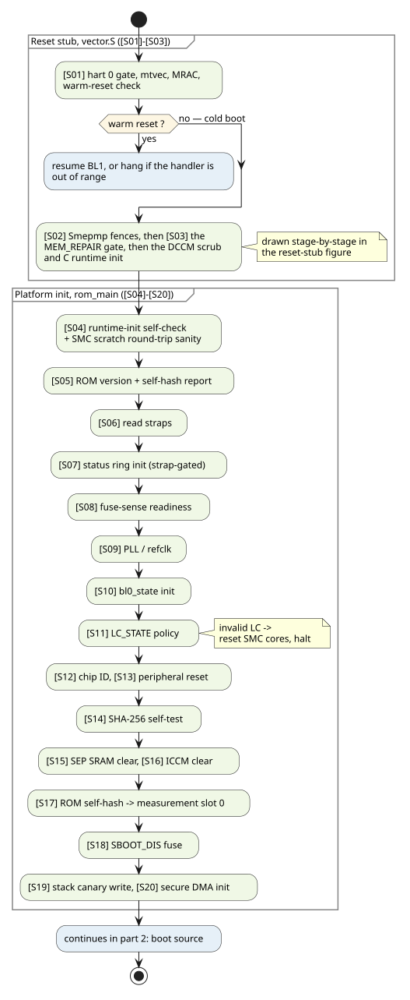
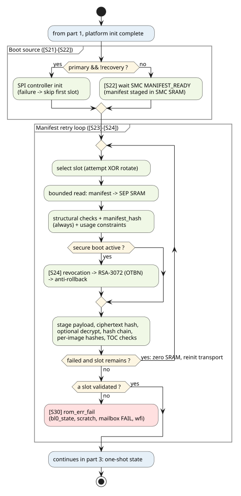
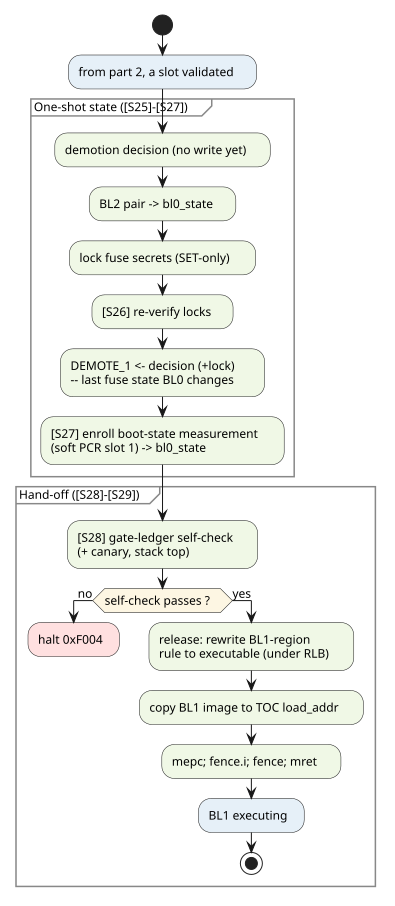
| Stage | Name | Summary | Chapter |
|---|---|---|---|
[S01] |
Reset entry, warm-reset detection |
Hart gate, trap vector, MRAC, warm-reset detection before any DCCM access |
|
[S02] |
PMP programming |
Execution fences installed before any C code runs |
|
[S03] |
DFT / MEM_REPAIR gate |
Memory-repair and MBIST results checked in |
|
[S04] |
Runtime init + entry checks |
DCCM scrub, |
|
[S05] |
ROM identity |
Version string + build-time ROM SHA-256 reported |
|
[S06] |
Strap read |
|
|
[S07] |
Status reporting init |
Status ring buffer in SMC SRAM (strap-gated) |
|
[S08] |
Fuse-sense readiness |
|
|
[S09] |
Clock init |
SMC-owned PLL from fuses, or 100 MHz refclk (strap-gated) |
|
[S10] |
|
Hand-off block zeroed; precedes every |
|
[S11] |
Lifecycle policy |
LC_STATE read + validated; invalid state bricks the SMU |
|
[S12] |
Chip ID |
|
|
[S13] |
Peripheral/bus reset |
OCAH-specific peripheral reset sequencing |
|
[S14] |
Crypto init |
SHA-256 self-test against NIST vector |
|
[S15] |
SEP SRAM clear |
SRAM zeroed before any external content is loaded |
|
[S16] |
ICCM clear |
ICCM zeroed for deterministic ECC state |
|
[S17] |
Measurement slot 0 |
Verified ROM self-hash enrolled — soft PCR + raw record in
|
|
[S18] |
SBOOT_DIS fuse |
Secure-boot chicken bit read into |
|
[S19] |
Stack canary write |
Canary placed at |
|
[S20] |
DMA init |
Secure DMA engine enabled |
|
[S21] |
Boot mode branch |
SPI (primary) vs recovery vs secondary; SPI init when applicable |
Primary / Secondary Strap Handling, SPI Initialization and Manifest Transfer |
[S22] |
SMC scratch coordination |
Manifest-ready hand-shake for recovery and secondary modes |
|
[S23] |
Manifest load + validate |
Retry loop over primary/backup banks; OCA validation including identity and usage constraints; payload load and checks |
OCA Manifest Format and Parsing, Payload Loading, Decryption and Verification, Retry and Backup Bank |
[S24] |
Crypto validation |
Secure-boot signature chain: revocation, RSA-3072, anti-rollback, decrypt |
|
[S25] |
Demotion + fuse locks |
Demotion registers written/locked; fuse secrets read-locked |
|
[S26] |
Lock confirmation |
Fuse-secret lock state independently re-verified |
|
[S27] |
Measurement slot 1 |
Boot-state record enrolled after demotion — soft PCR + raw record
in |
|
[S28] |
Stack canary check |
Canary re-verified, before the hand-off that does not return |
|
[S29] |
BL1 hand-off |
Pre-hand-off self-check, PMP release, jump to BL1 |
|
[S30] |
Error convergence |
All failures funnel into |
Ordering Invariants
Three structural rules shape the flow; they exist to bound the effect of any single failure and shall be preserved by any reordering of the stages:
-
Fences before code. The PMP execution fences are programmed in the reset stub, before the first C instruction executes and before any external agent’s data is touched.
-
Retry only what is idempotent. The manifest/payload load and validation stages ([S23] and [S24]) live inside the bank retry loop and have no side effects on device state. Failures there move to the backup bank (Retry and Backup Bank).
-
One-shot effects after the loop converges. Stages that mutate device state irreversibly — demotion register writes, fuse-secret locking, measurement, hand-off — execute exactly once, only after a manifest+payload pair has fully validated. They are never retried.
1.6. CPU Initialization
This chapter covers everything from the release of the SEP core reset to the point where the
boot flow is ready to select a boot source: the assembly reset stub (src/vector.S), and the
early platform-initialization stages of rom_main() ([S04]–[S20]).
Reset Entry
The core enters at _start in the Boot ROM. Hart 0 is the hart whose mhartid CSR reads
zero. The fitted VeeR EL2 core is single-hart, so hart 0 is the only hart that exists; the gate
in item 1 is a defensive check that keeps the boot flow correct if the core is ever fitted with
more.
The following actions occur strictly in order, before any other memory or MMIO access:
-
[SEP-ROM-CPU-010] Only hart 0 shall execute the boot flow. Any other hart shall set its trap vector and park permanently in a
wfiloop. -
[SEP-ROM-CPU-020] The trap vector (
mtvec) shall be programmed before the first MMIO access, so that any early bus fault produces a diagnosable trap rather than a silent hang. -
[SEP-ROM-CPU-030] The VeeR MRAC CSR (
0x7C0) shall be configured (value0xAAAAAAA8: side-effect, non-cacheable attributes for device regions) before the warm-scratch register is read, so the read is performed with correct memory attributes. -
The warm-reset check runs next — see Warm-Reset Resume Path. It executes before the stack is established and before any DCCM write, because on a warm reset DCCM still holds live BL1 state that must not be disturbed.
Cold Boot Environment Setup
On the cold-boot path (cold_scratch[7] = 0), the stub then establishes the C execution
environment:
-
cold_scratch[7]is defensively cleared. -
[SEP-ROM-CPU-150] The stack and the C globals shall live in DCCM. The stub sets the stack pointer to
stack_topand the global pointer toglobal_pointer$, both placed in DCCM by the linker scriptlink/rom.ld. SEP SRAM is where manifest and payload bytes are staged, so a stack or global placed there would be writable by the content the ROM is still deciding whether to trust. -
Outbound AXI filter. [SEP-ROM-CPU-040] The SEP outbound AXI filter shall block all egress by default; the ROM shall open only the windows it needs. At cold boot the stub programs filter 0 to the 4-byte STDOUT mailbox window (
START=0x8000_0000,END=0x8000_0003,CONFIG=0x0000_0001_0100_0013), writingCONFIGlast (after afence w,w) so the range is committed before the filter is enabled. -
The debug status word for "entered
_start`" is written to `cold_scratch[1]. -
[SEP-ROM-CPU-050] Interrupts shall remain disabled for the entire ROM execution:
mieis cleared andmstatus.MIEis cleared at entry, and no ROM stage re-enables them. -
The PMP execution fences are programmed — see Physical Memory Protection and Execution Fencing.
-
MEM_REPAIR / MBIST gate. The memory-repair and MBIST results are checked here, in assembly, before the DCCM scrub below writes 128 KiB into memories whose repair state is still unknown ([S03], SMC Synchronization).
-
DCCM scrub. [SEP-ROM-CPU-160] The ROM shall leave DCCM in a deterministic state before the C runtime reads it, so that no uninitialized-ECC read and no stale value from a previous boot reaches the boot flow. The stub zero-fills DCCM from its base up to at most
__stack_top. The scrub length is a build-time knob (DCCM_SCRUB_BYTES, default 128 KiB = full DCCM);0disables the scrub and is a simulation-preload configuration only, not a product one. -
C runtime init.
.datais copied from its load image in ROM (__data_load_start, LMA assigned byAT> rom) to its DCCM run address, and.bssis zeroed.
The stub then calls rom_main(). If rom_main() ever returns, the stub parks in wfi.
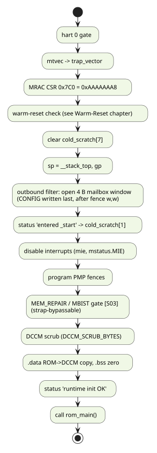
Trap Handling
[SEP-ROM-CPU-070] Any trap taken during ROM execution is fatal: the
trap vector shall capture mcause/mepc/mtval/mstatus, report them through the debug
console, signal FAIL through the STDOUT mailbox (magic 0xA5A55A5A followed by 0xDEADBEEF),
and hang in wfi. The ROM shall never attempt to resume from a trap.
Watchdog Posture
[SEP-ROM-CPU-080] The ROM shall not arm the watchdog timer. WDT ownership belongs to BL1; the ROM’s only WDT-related obligation is the warm-reset re-entry protocol (Warm-Reset Resume Path). Consequently every unbounded wait in the ROM (fuse sense, PLL lock, SMC hand-shake spins) hangs the boot rather than triggering a retry — this is the accepted failure mode for BL0, observable through the status channel (Status and POST Codes).
Early Platform Initialization ([S04]–[S20])
After the entry checks, rom_main() performs the following platform bring-up, in order:
| Stage | Behavior |
|---|---|
[S04] SMC access sanity |
Write/read-back of four patterns through SMC scratch[7] proves the
outbound path to the SMC responds before the boot flow depends on it. Mismatch is fatal
( |
[S05] ROM identity |
ROM version string and build-time SHA-256 are emitted (see
Boot Measurement), and the |
[S06] straps |
Latched straps parsed into the boot configuration (Primary / Secondary Strap Handling). |
[S07] status init |
Status ring buffer initialized unless disabled by strap (Status and POST Codes). |
[S08] fuse sense |
|
[S09] clocks |
|
[S10] |
Hand-off block initialized at the top of DCCM (Hand-off to BL1). |
[S11] lifecycle |
LC_STATE read + policy (Fuse and System State). |
[S12] chip ID |
|
[S13] peripheral reset |
OCAH-specific peripheral/bus reset sequencing. |
[S14] crypto self-test |
SHA-256 of |
[S15] SRAM clear |
SEP SRAM ( |
[S16] ICCM clear |
ICCM zeroed (base/size are build-time parameters; deterministic ECC state for BL1). |
[S17] ROM self-hash |
Embedded hash verified by recompute over the ROM region, then
enrolled in soft measurement slot 0 (Boot Measurement). Fatal on mismatch ( |
[S18] SBOOT_DIS |
Secure-boot chicken bit read (Fuse and System State). |
[S19] canary |
Stack canary written (Hand-off to BL1). |
[S20] DMA |
Secure DMA engine initialized. |
[SEP-ROM-CPU-090] The ROM shall self-test the SHA-256 engine against
a known-answer vector (FIPS 180-4 "abc" digest) before any security decision consumes a hash
result. A mismatch or engine timeout is fatal (ROM_ERR_CRYPTO_SELFTEST_FAILED, 0xF002).
[SEP-ROM-CPU-100] The ROM shall clear SEP SRAM and ICCM before loading any external content, so that no stale or attacker-resident data can survive into the validated-boot environment.
|
IMPLEMENTATION GAP — the peripheral/bus reset stage is a stub in the current implementation
( |
1.7. Warm-Reset Resume Path
A watchdog-initiated warm reset resets the SEP CPU (all CSRs return to reset values) but
preserves ICCM, DCCM, SEP SRAM, and the warm scratch registers. Since BL1 arms the WDT and
runs from its TOC-selected region, a WDT bark lands the core back at the ROM’s _start while
BL1’s state is
still resident. The warm-reset path returns control to BL1 with minimal disturbance.
Protocol
BL1 side (contract): before arming the WDT, BL1 writes the address of its warm-reset
handler to cold_scratch[7]. The handler must lie in a permitted BL1 execution region — the same set BL1_SRAM_EXEC_ENABLE governs, because accepting a warm handler where the
cold path would refuse to boot would let a warm reset re-enter code the ROM would never
have launched. BL1 re-arms
this value as needed; a value of zero means "no warm handler — treat any reset as cold".
ROM side:
-
[SEP-ROM-CPU-110] The ROM shall read
cold_scratch[7]before any DCCM access (no stack, no scrub, no.data/.bsswrites), so that a warm reset preserves BL1’s runtime state in DCCM intact. -
If the value is zero, the boot is a cold boot; the ROM defensively clears
cold_scratch[7]and proceeds (CPU Initialization). -
[SEP-ROM-CPU-120] A non-zero value shall be accepted only if it lies within a permitted BL1 execution region — ICCM (
[SEP_ICCM_MEM_BASE, SEP_ICCM_MEM_BASE + SEP_ICCM_SIZE)) or SEP SRAM ([SEP_SRAM_MEM_BASE, SEP_SRAM_MEM_BASE + SEP_SRAM_SIZE)). Both bounds are exclusive of the ROM itself and of every other region. The two are tested separately: accepting only one would reject a legitimate handler running from the other. -
[SEP-ROM-CPU-130] Before jumping to a valid handler, the ROM shall poison
cold_scratch[7](write 0) so a subsequent reset cannot re-enter a stale handler. The jump is taken with CSRs at reset values; the warm handler owns all further setup (sp,mtvec, PMP). -
[SEP-ROM-CPU-140] An out-of-range non-zero value shall cause the ROM to hang (
wfiloop), not fall through to cold boot: an invalid handler pointer indicates corruption or an attack, and silently cold-booting would hand an attacker a reset-to-retry primitive against BL1’s live state.
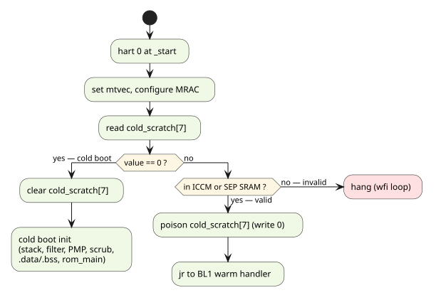
|
The warm path intentionally performs no security re-validation: it never touches the
manifest, fuses, or crypto. Its security rests on (a) the range check above, (b) the fact
that only software that has already passed secure boot (BL1) can write |
1.8. Physical Memory Protection and Execution Fencing
The PMP is the ROM’s execution fence: from the moment the C environment exists until the hand-off self-check has passed, the only executable bytes in the SEP address space shall be the Boot ROM itself. This bounds the blast radius of every downstream stage — a corrupted manifest, payload, or DMA transfer can place bytes in SRAM/ICCM, but cannot cause them to execute before validation completes.
Fence Policy (Normative)
-
[SEP-ROM-PMP-010] From PMP programming (before the first C instruction) until the hand-off release (Hand-off to BL1), instruction fetch shall be possible only from the Boot ROM region (
0x1004_0000, 64 KiB). A fetch from any other region shall trap (fatal, per SEP-ROM-CPU-070). -
[SEP-ROM-PMP-020] The fences shall bind the privilege mode the ROM actually runs in. The ROM executes exclusively in machine mode, and unlocked PMP entries do not constrain M-mode accesses; therefore the fence entries shall either carry the lock bit (
L=1) or an equivalent machine-mode-binding mechanism (e.g. Smepmpmseccfg.MMWP) shall be in effect. -
[SEP-ROM-PMP-030] The regions that will hold next-stage code (SEP SRAM and ICCM) shall be writable but non-executable (
RW-) for the entire validation portion of the boot. Execute permission for whichever region BL1 was loaded into shall be granted only at hand-off, after the pre-hand-off self-check passes. -
[SEP-ROM-PMP-040] Data windows shall be limited to the regions the ROM demonstrably needs: DCCM (
RW), the STDOUT mailbox, the SEP peripheral block (0x1080_0000–0x10BF_FFFF: DMA, scratch, crypto, lifecycle, efuse, SPI hosts), the Cadence xSPI controller and XIP windows (when fitted), the SMC window (0x4000_0000), SEP SRAM and ICCM (RW, for staging). Everything else shall have no PMP grant. -
[SEP-ROM-PMP-050] The hand-off release shall be the last security-relevant action of the ROM: no execute permission beyond ROM may exist until every check enumerated in the hand-off self-check (Hand-off to BL1) has passed.
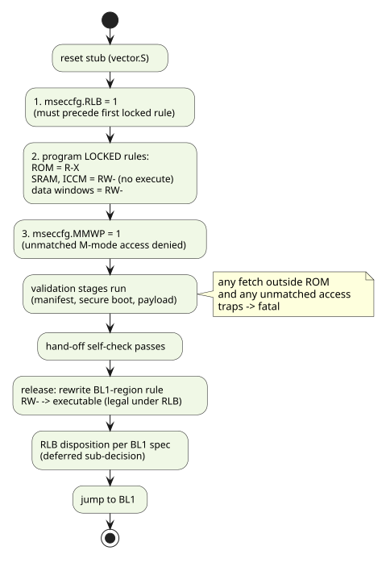
Fence Binding and Release Mechanism (Smepmp)
The fences are bound to machine mode and released using the
Smepmp extension — locked rules plus mseccfg (MMWP default-deny, RLB rule-locking
bypass). The fitted core supports this: the SEP VeeR EL2 snapshot
(vendor/…/overlay/snapshots/sep/common_defines.vh) confirms RV_PMP_ENTRIES 16,
RV_SMEPMP 1, and RV_USER_MODE 1.
Three RTL behaviors shape the programming sequence (el2_dec_pmp_ctl.sv,
el2_dec_tlu_ctl.sv, el2_pmp.sv):
-
Unlocked entries never constrain M-mode (base-PMP rule); only
L=1rules bind the ROM. -
mseccfg.RLBis write-gated: while any PMP entry is locked, RLB can only be cleared, never set. RLB must therefore be set before the first locked rule is programmed, or the capability is lost until reset. -
mseccfg.MMWPandmseccfg.MMLare sticky — set-once until reset. Setting MMWP commits every post-ROM stage to maintaining complete PMP coverage of everything it accesses.
Cold-Boot Programming Sequence
-
[SEP-ROM-PMP-060] The ROM shall set
mseccfg.RLB=1before programming any locked PMP rule (the RTL write-gate makes a late set impossible), and shall program all fence rules withL=1. -
[SEP-ROM-PMP-070] After the locked rule set is programmed, the ROM shall set
mseccfg.MMWP=1, establishing machine-mode default-deny: any access matching no rule faults. No catch-all entry is used; a window the rule set fails to grant shall manifest as a precise trap (fatal per SEP-ROM-CPU-070), never as silent access. -
The locked rule set implements Reference PMP region set (as currently programmed) as amended by the fence policy: ROM
R-X; DCCM, mailbox, peripheral block, SMC window, xSPI controller/XIP windowsRW-; SEP SRAM and ICCMRW-(no execute) until hand-off.
Release at Hand-off
[SEP-ROM-PMP-080] The hand-off release (SEP-ROM-HOFF-060) shall be
implemented as a single rewrite of the locked BL1-region rule from RW- to executable —
legal only while mseccfg.RLB=1 — executed strictly after the pre-hand-off self-check
passes. The ROM shall not clear mseccfg.MMWP (it cannot) and shall not modify any other
rule at release.
The disposition of mseccfg.RLB at the jump itself — leave set for BL1 to manage its own
fencing of BL2, or clear to freeze the rule set — is a deferred sub-decision owned by the
BL1 specification; verification shall parameterize it. MML (machine-mode W^X) is likewise
deferred as a possible later hardening increment and is not required by this document.
|
Residual-risk statement: while |
Reference Region Set
Reference PMP region set (as currently programmed) lists the NAPOT region set programmed by the reference implementation
(vector.S, PMP_ENABLE=1). All entries are NAPOT-encoded; pmpaddr values are the
literal CSR values.
| Entry | Region | Base | Size | Perms (code) | pmpaddr |
Note |
|---|---|---|---|---|---|---|
0 |
Boot ROM |
|
64 KiB |
R-X |
|
BL0 itself |
1 |
DCCM |
|
128 KiB |
RW- |
|
runtime data, stack, |
2 |
Mailbox |
|
4 KiB |
RW- |
|
STDOUT mailbox window |
3 |
SEP SRAM |
|
256 KiB |
RWX |
|
manifest/payload staging; a BL1 launch
region when |
4 |
Peripherals |
|
4 MiB |
RW- |
|
DMA, scratch, crypto, lifecycle, efuse, SPI hosts |
5 |
ICCM |
|
256 KiB |
RWX |
|
the secure BL1 code region, always a launch target — this specification requires RW- until hand-off |
6 |
SMC/local window |
|
256 MiB |
RW- |
|
overlaps entries 1/5; the lower-numbered entry takes precedence for its sub-range |
pmpcfg0 = 0x1F1B1B1D and pmpcfg1 = 0x001B1F1B (with PMP_LOCK=1, the same values
with L set: 0x9F9B9B9D / 0x009B9F9B). Entry 7 is unused.
|
IMPLEMENTATION GAP — the current region set does not yet implement the normative fence policy:
The pre-hand-off software self-check (gate ledger) is implemented but not yet on |
1.9. Fuse and System State
The device’s security posture is rooted in OTP fuses. Fuse sensing is performed by hardware;
the ROM consumes shadow registers in the SEP efuse map (0x1093_0000). Differential
decoding and signal-integrity checking of sensed values are done in RTL
(prim_diff_decode_multi) before the shadow registers are populated.
Fuse-Sense Readiness
[SEP-ROM-FUSE-010] The ROM shall not consume any fuse shadow value
before fuse sensing has completed. Completion is indicated by
SEP_CPU_CTRL_SMC_FUSE_SENSE_STATUS bit 0 (smc_fuse_sense_done); the ROM polls it without
timeout (the accepted BL0 hang failure mode, SEP-ROM-CPU-080).
The poll is a discrete stage ([S08]) that runs unconditionally, ahead of every fuse consumer:
the smu_pll_sysclk read in [S09], the lifecycle state in [S11], SBOOT_DIS in [S18], and the
key digests, revocation bits, security version and identity fields read during manifest
validation. The ROM does not rely on sensing having completed before the SEP core reset
released.
A shadow read taken before sensing completes returns zero, and zero is a legal encoding for
the fields that gate security — LC_STATE zero decodes as TEST_DEV, where secure boot is
optional — so an early lifecycle read would fail open.
Lifecycle State ([S11])
The 4-bit lifecycle state is read from the low nibble of SEP_EFUSE_MAP_LC_STATE
(0x1093_0008).
| State | Raw value | Manifest LC bit | Meaning |
|---|---|---|---|
|
|
0 |
Development / test. Security optional (see Secure Boot Decision and Signature Verification). |
|
|
1 |
Production. Secure boot enforced. |
|
|
3 |
Return-material state, system-in-package scope. |
|
|
4 |
Return-material state, chiplet scope. |
|
|
2 |
End-of-life production. Secure boot enforced; demotion permanently locked out (Demotion Handling). |
any other |
|
— |
Invalid — see below. |
[SEP-ROM-FUSE-020] The ROM shall validate the sensed LC state
against the closed set above. On an invalid value the ROM shall (a) hold all SMC cores in
reset (write 0xF to the core reset bits of SMC CPU_CTRL_RESET_CTRL), rendering the SMU
inoperative, and (b) fail fatally (ROM_ERR_LIFECYCLE_INVALID, 0xA002). An invalid LC
state may indicate a fuse attack or hardware fault; the system shall not run in an unknown
lifecycle state.
[SEP-ROM-FUSE-030] The validated LC state shall be recorded in
bl0_state.lc_state for consumption by later stages and by BL1, and shall be reported on the
status channel.
The 64-bit FEAT_CTRL register of the lifecycle controller (0x1091_8000) is captured into
bl0_state.feat_ctrl_lo/hi at the same stage.
Secure-Boot Chicken Bit ([S18])
SEP_EFUSE_MAP_SBOOT_DIS (0x1093_000C) bit 0 (disable_secure_boot) is the secure-boot
chicken bit. It is read once, recorded in bl0_state.sboot_dis, and consumed by the
secure-boot decision (Secure Boot Decision and Signature Verification) and the boot measurement
(Boot Measurement).
Fuse Fields Touched by the ROM
| Field | Address | Size | ROM usage |
|---|---|---|---|
|
|
32 b |
Read-lock control for the six protected fields; SET-only, and cleared by reset. Written + verified at [S25]/[S26] (Hand-off to BL1). |
|
|
8 b (low 4 used) |
Lifecycle state (this chapter). |
|
|
1 b |
Secure-boot chicken bit. |
|
|
256 b |
Pre-shared secret for payload-decryption KDF (Payload Loading, Decryption and Verification). Read-locked before hand-off. |
|
|
32 b |
Device-held root-key revocation bits (Secure Boot Decision and Signature Verification). |
|
|
256 b |
Anti-rollback thermometer for the BL1 manifest security version (Secure Boot Decision and Signature Verification). |
|
|
256 b each |
SHA-256 digests of the chiplet-creator field-programmable RSA-3072 public keys; select bits 16 / 17 (Root key slots). |
|
|
256 b each |
SiP-owner key digests; select bits 20 / 24 (Root key slots). |
|
|
256 b |
System-owner key digest; select bit 22 (Root key slots). |
|
|
32 b |
|
|
|
32 b |
Status-reporting policy modifiers. |
|
|
256 b |
Secret. Per-device seed for Key Manager key derivation, chiplet scope. The ROM never reads it; it read-locks it before hand-off ([SEP-ROM-HOFF-030]). |
|
|
256 b |
Secret. Per-device key-derivation seed, SiP scope. Read-locked, never read ([SEP-ROM-HOFF-030]). |
|
|
256 b |
Secret. Per-device key-derivation seed, system scope. Read-locked, never read ([SEP-ROM-HOFF-030]). |
|
|
1.10. SMC Synchronization
The SMC and SEP ROMs boot in parallel and coordinate exclusively through (a) the SMC CPU_CTRL scratch registers and (b) shared buffers in SMC SRAM. There is no interrupt or mailbox signalling between the two ROMs; every hand-shake is a polled scratch-register read. The SMC side of this protocol is specified in the SMC ROM Boot Architecture Specification; this chapter defines the SEP-side contract.
[SEP-ROM-SMC-010] All SEP↔SMC coordination values that refer to SMC SRAM shall be exchanged as offsets into SMC SRAM, never absolute addresses (the two sides map SMC SRAM at different addresses).
Scratch-Register Protocol
| Index | Name | Writer | Meaning |
|---|---|---|---|
1 |
POST code |
SMC |
SMC-side boot progress (informational to SEP). |
2 |
Virtual console |
SMC |
SMC debug console channel. |
7 |
(scratch) |
SEP |
Unassigned register used by the SEP ROM’s write/read-back sanity check; restored to 0 afterwards. |
8 |
|
SMC |
Offset of a staged manifest in SMC SRAM (recovery/secondary boot).
|
9 |
|
SMC |
Bitfield: bit 0 |
10 |
|
SEP |
Raw |
11 |
|
SMC |
Offset of the status ring buffer in SMC SRAM. |
13 |
|
SMC |
Offset of the SMC-SRAM region the SEP may write (payload staging). |
14 |
|
SMC |
Size of that region. |
15 |
|
SMC |
|
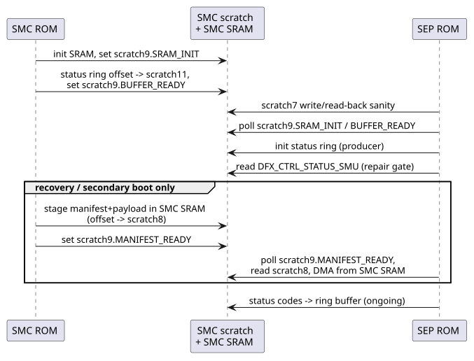
SMC Access Sanity Check
Before any protocol decision depends on the SMC, the ROM proves the outbound path works:
four patterns (0xA5A55A5A, 0x12345678, 0x00000000, 0xFFFFFFFF) are written to
scratch[7] and read back. [SEP-ROM-SMC-020] A read-back mismatch is
fatal (0xA001); the register shall be restored to zero on success.
Memory-Repair / DFT Gate ([S03])
[SEP-ROM-SMC-030] The ROM shall not proceed past [S03] unless memory
repair completed successfully: DFX_CTRL_STATUS_SMU (SMC window offset 0xF800) bit 1
(mem_repair_success) set. On failure the ROM shall dump the raw status to scratch[10], emit
a MBIST_FAIL warning, and then fail fatally (ROM_ERR_DFT_GATE_BLOCKED, 0xD001) unless
the mem_repair_bypass strap (STRAPS_LO[13]) is set, in which case boot continues with the
warning recorded.
Status Ring Buffer
When status reporting is enabled (Primary / Secondary Strap Handling), the ROM initializes a produce-only ring
buffer in SMC SRAM at the offset published in scratch[11] and thereafter mirrors every
non-debug status code into it (Status and POST Codes). The SMC consumes the ring and forwards
entries to the platform (OCCP). Ring initialization waits for the SMC’s
SRAM_INIT/BUFFER_READY indications.
Chip Identification ([S12])
CHIP_CONFIG_CHIP_ID (SMC window offset 0x2908) is read once and reported on the status
channel (low 16 bits as an INFO_EXT status word). The read is diagnostic: it gives DV and a
debugger the part’s identity, and exercises the SMC chip_config path while a failure there is
still attributable.
No boot decision is taken from it. The identity a manifest binds to comes from the SEP eFuse chiplet, SiP and system ID fields (OCA Manifest Format and Parsing), which are sensed locally — not from this SMC register. Those ID fields are the non-secret per-part identifiers and are not read-locked; the read-locks cover the secrets, including the separate UID seeds (SEP-ROM-HOFF-030).
Manifest Staging Hand-shake (Recovery / Secondary)
For the recovery and secondary boot modes, the manifest+payload arrive via the SMC (delivered over I3C by the platform, per the SMC ROM specification):
-
[SEP-ROM-SMC-040] The ROM shall wait (unbounded poll) for
scratch9.MANIFEST_READYbefore consuming scratch[8]. -
[SEP-ROM-SMC-050] The ROM shall reject a manifest offset of
0xFFFFFFFFand shall bounds-check the staged manifest and any payload region announced via scratch[13]/[14] against the 1 MiB SMC SRAM window before reading. -
The manifest is copied by secure DMA from
SMC_SRAM_base + scratch[8]into SEP SRAM and from then on follows the same validation path as a SPI-loaded manifest (OCA Manifest Format and Parsing).
1.11. Primary / Secondary Strap Handling
An OCAH chiplet is either primary or secondary, selected by a hardware strap. Straps are
sensed and latched by the SMC reset unit; the SEP reads the latched values over the SMC
window (STRAPS_LO @ 0x2090, STRAPS_HI @ 0x2094). The strap bit positions are part of
the SEP↔SMC interface contract.
| Strap | Bit | Effect on BL0 |
|---|---|---|
|
|
1 = primary chiplet: mutable software loads from SPI NOR flash. 0 = secondary: manifest+payload delivered by the SMC (I3C → SMC SRAM). |
|
|
Permits boot to continue past a memory-repair gate failure (SMC Synchronization). |
|
|
1 = skip status ring-buffer initialization;
status codes still go to |
|
|
1 = recovery mode: even a primary chiplet ignores SPI and waits for a manifest from SMC SRAM. |
|
|
1 = initialize the PLL from fuses; 0 = stay on the 100 MHz reference clock. |
|
|
1 = swap the primary/backup manifest slot order for this boot (Retry and Backup Bank). |
Boot-Mode Selection ([S21])
[SEP-ROM-STRAP-010] The ROM shall select exactly one boot mode
from the strap combination, record it in bl0_state.boot_mode, and report it on the status
channel:
primary_chiplet |
boot_recovery |
Mode | Boot source |
|---|---|---|---|
1 |
0 |
|
SPI NOR flash; SPI controller initialized (SPI Initialization and Manifest Transfer); bank retry available. |
1 |
1 |
|
Manifest from SMC SRAM (SMC Synchronization); single attempt, no bank retry. |
0 |
— |
|
Manifest from SMC SRAM; single attempt, no bank retry. |
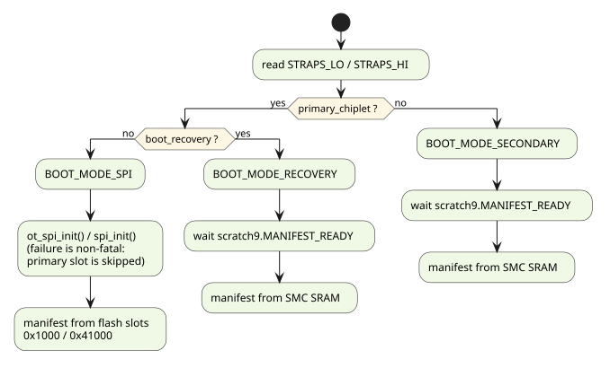
|
In the secondary path the payload is not re-fetched by the SEP: the SMC has already placed manifest and payload contiguously in SMC SRAM. The SEP copies the manifest (and payload) into SEP SRAM under the same bounds checks as the SPI path, but there is no transport (re-)initialization and no backup bank — the platform is responsible for retrying delivery. |
[SEP-ROM-STRAP-020] SPI controller initialization failure in
BOOT_MODE_SPI shall not be immediately fatal: the failure is recorded and the manifest
retry loop skips the primary slot attempt (falling through to the backup-slot logic, which
re-initializes the transport, Retry and Backup Bank). Boot fails only when no slot yields a valid
manifest+payload.
1.12. SPI Initialization and Manifest Transfer
On a primary chiplet, mutable software is read from SPI NOR flash at fixed offsets. OCAH fits
one of two SPI controllers; the ROM supports both behind a single transport abstraction, and
the choice is made at build time (BOOT_SPI_CONTROLLER_OT). The manifest loader is
controller-agnostic: it speaks in flash byte offsets only.
[SEP-ROM-SPI-010] All flash access from the boot path shall go
through the transport shim (boot_flash.h): boot_flash_init(), boot_flash_read(dst,
flash_off, len), boot_flash_reinit(), boot_flash_bounds_ok(). Boot logic shall not
depend on which controller is fitted.
Flash Layout
| Offset | Content | Notes |
|---|---|---|
|
Primary SPI configuration TLV |
Cadence path only: PHY tuning parameters read during controller bring-up. |
|
Primary manifest (4096 B) |
|
|
Primary payload |
Located by the manifest’s |
|
Backup SPI configuration TLV |
Cadence path only. |
|
Backup manifest (4096 B) |
|
|
Backup payload |
A slot is BOOT_SLOT_SIZE bytes, 256 KiB by default — the size of SEP SRAM, since a staged
manifest+payload cannot exceed what SRAM can hold. PRIMARY_MANIFEST_OFFSET and
BACKUP_MANIFEST_OFFSET are derived from that size in include/boot_flash.h
(slot index × BOOT_SLOT_SIZE, plus the manifest’s offset within a slot), so the stride
above is a consequence of the slot size rather than an independent constant. The ROM’s
readable window for a slot runs from its manifest to the end of that slot.
The OCA combined-image configs place the backup manifest at 0x41000, matching the offsets
above, and backup-slot rotation is exercised in simulation. The offsets in
Boot flash layout remain normative for any producer.
Transfer Hardening
[SEP-ROM-SPI-020] Every flash read issued by the boot path shall be
bounds-validated before the transport is touched: the flash range must lie entirely within
the primary or backup slot window, and the destination range entirely within SEP SRAM. The
decision shall be evaluated twice — the second time over optimizer-opaque copies of the
operands (harden_u32 value laundering) so the compiler cannot fold the evaluations — and
shall default to reject if the two evaluations disagree (fault-injection hardening).
[SEP-ROM-SPI-030] A transport-level read fault shall be retried a bounded number of times (OpenTitan driver: 3) before being reported to the loader; a read that still fails is handled by slot fallback (Retry and Backup Bank), never by accepting partial data.
OpenTitan SPI Host Path
The OpenTitan controller has no memory-mapped window; flash is reached through command/FIFO transactions:
-
Reads are segmented: one SPI command segment carries at most 512 data bytes (
CMD.LENis 9 bits); larger reads loop over segments sized to the 256-byte RX FIFO. -
Two drain methods, selected at build time (
BOOT_OT_SPI_USE_PIO): secure-DMA drain (default — the DMA drainsRXDATAon the RX-watermark hardware handshake while the flash streams) or CPU programmed I/O (simpler, used for diagnostics). -
All timing/device parameters live in an editable profile table (
sep_ot_spi_profiles.h): SCK target, CPOL/CPHA,fullcyc(late sampling to absorb the SCK→flash→data round trip), CSN timing, read opcode, dummy cycles, data width (std/dual/quad), address bytes, RX watermark. Entry 0 is the safe default (standard read0x03, mode 0). Supporting a new flash device is a table edit, not a code change. -
[SEP-ROM-SPI-040] Boot shall never depend on a programmed OTP fuse for SPI parameter selection: the default profile shall work with blank fuses. A fuse-driven profile selector is deliberately not implemented; it is gated behind a dedicated OTP-usage evaluation (OT SPI driver spec, research item R13) and shall not be added before that evaluation concludes.
Driver internals (register sequencing, watermark handling, error recovery) are specified in
the OpenTitan SPI Bootcode Driver spec (specs/001-ot-spi-bootcode-driver/).
Cadence xSPI Path
The Cadence controller exposes flash as a memory-mapped XIP window at 0x3000_0000
(SEP_SPI_BASE); a "read" is a secure-DMA copy from SEP_SPI_BASE + offset into SRAM.
Bring-up is a multi-phase sequence: a sweep over candidate PHY parameter sets (fuse-adjustable)
until the flash device answers, application of the slot’s configuration TLV, and optional DLL
margining that re-reads the TLV at low/high timing margins to confirm the operating point.
Slot rotation (rotate_update strap) and backup-bank fallback re-run bring-up against the
backup TLV.
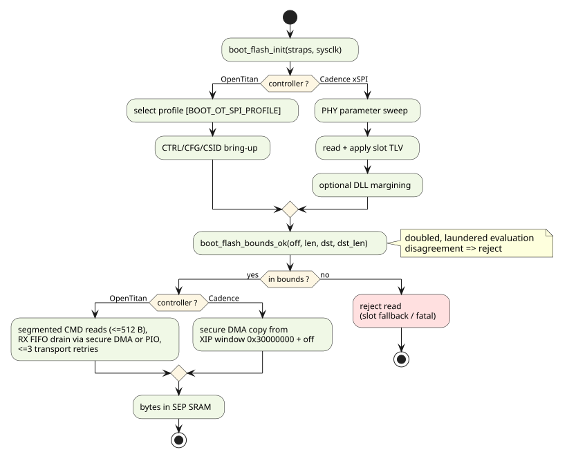
1.13. OCA Manifest Format and Parsing
OCAH mutable software is delivered as manifest + payload artifacts. The manifest is the
metadata layer carrying every security control; the payload is the collection of binary
images. The SEP ROM consumes the Open Chiplet Atlas (OCA) CLASSIC manifest format, produced
and validated by the tt-oca-manifest tooling.
| The ROM parses the OCA format only, by linking the freestanding OCA validation library. An image whose magic matches no OCA variant fails at the magic check. |
Format Summary
-
Magic
"OCAC"; body exactly 4096 bytes; all multi-byte integers little-endian. -
Signed region: bytes
[0, 3172)— everything from the magic through the 4-byte trailer (0xCA 0xCA 0xCA 0xCAat offset 3168). The RSA signature and the manifest hash both cover exactly this region. -
Unsigned tail: bytes
[3172, 4096)— the signature itself, the manifest hash, the payload offset, and the unauthenticated flags. -
The payload (TOC + images) follows at
payload_offsetbytes from the start of the manifest.
ROM-Relevant Field Layout
OCA CLASSIC manifest — fields consumed by the SEP ROM lists the fields the ROM consumes. Authoritative source:
oca_layout_classic.h / oca_layout.h (tt-oca-manifest); reserved fields not listed here
must be zero and are covered by the reserved-bits check.
| Offset | Size | Field | ROM usage |
|---|---|---|---|
0 |
4 |
|
|
4 |
8 |
|
ASCII label (diagnostic). |
12 |
2+2 |
|
Format compatibility: reject |
16 |
4 |
|
Must equal 4096. |
24 |
16 |
|
Usage-constraint enable bitmap (identity words, lifecycle levels, version ranges). |
40/72/104 |
32 ea |
|
Identity constraints vs device
fuses (unselected bytes = |
136–144 |
4 ea |
|
Allowed-lifecycle bitmasks (bit positions per Lifecycle states). |
148–164 |
8 ea |
|
Min/max version window constraints. |
172 |
2 |
|
Demotion directive pairs (Demotion Handling). |
182 |
1 |
|
bit 0 |
191 |
2 |
|
u16 LE. Device-state update suppression, honored only under secure boot: bit 0 = security version, bit 1 = ROOT-key revocation, bit 4 = cohort-enforce, bit 5 = class-revoke. Bits 3:2 (verifier-key state) are defined by the format but not honored — verifier entries are deferred. Bits 15:6 reserved and ignored. |
201 |
2 |
|
bit 0 = payload encrypted; bits 5:3 = key source
( |
203 |
2 |
|
|
205 |
2 |
|
Which provisioned secret; OCAH uses the
|
235 |
32 |
|
AES-CBC IV in the low 16 bytes. |
275 |
64 |
|
Full 64-byte field is the KDF context (Payload Loading, Decryption and Verification). |
2042 |
16 |
|
128 independent anti-rollback posture flags (superset rule; Secure Boot Decision and Signature Verification). |
2058 |
1 |
|
|
2067 |
1 |
|
|
2092 |
1 |
|
|
2093 |
1 |
|
|
2094 |
2 |
|
Valid bytes within |
2104 |
16 |
|
128-bit key-authorization bitmap (Secure Boot Decision and Signature Verification). |
2120 |
532 |
|
Signer public key (RSA-3072 modulus raw-LE or DER SPKI), right-zero-padded. |
2652 |
1 |
|
Key encoding selector. |
2653 |
2 |
|
Valid bytes within |
2655 |
16 |
|
Manifest root-key revocation bitmap (Secure Boot Decision and Signature Verification). |
2775 |
64 |
|
SHA-256 (low 32 bytes) over the stored payload — ciphertext when encrypted. Checked before decryption. |
2847 |
64 |
|
Chained SHA-256 over the plaintext TOC and images (Payload Loading, Decryption and Verification). |
2911 |
8 |
|
Stored-payload byte count covered by |
2919 |
1 |
|
|
2960 |
8 |
|
Total payload length. |
2968 |
8 |
|
Packed content version (diagnostic). |
2976 |
128 |
|
ASCII, NUL-terminated (diagnostic). |
3168 |
4 |
|
Four |
3172 |
512 |
|
Signature over |
3684 |
64 |
|
SHA-256 (low 32 bytes) over |
3748 |
8 |
|
Signed offset, manifest start → payload. |
3756 |
8 |
|
Unsigned-tail flags; bit 0 = secure-boot escalation (Secure Boot Decision and Signature Verification). All other bits reserved (0). |
Validation Library Integration
[SEP-ROM-MAN-020] The ROM shall validate manifests with the
freestanding OCA validation library (validators/oca/lib/, oca_validator.h),
supplying its hardware bindings through the oca_callbacks_t table (SHA-256 via the HMAC
block, RSA-3072 via OTBN, payload decryption via KDF+AES, identity/lifecycle/version reads
from fuses, device revocation and security-version state from the efuse map). The library
holds no static state and performs no device mutation; state commit is a separate explicit
call (Secure Boot Decision and Signature Verification).
[SEP-ROM-MAN-030] Checks shall run in the canonical order (the
oca_validate() composition), stopping at the first failure:
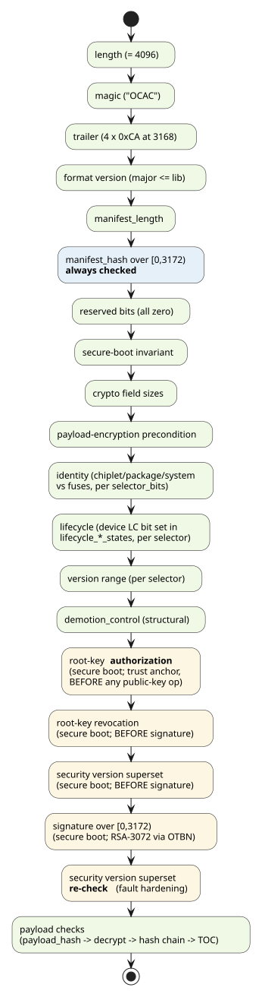
The corresponding oca_result_t failure codes and their mapping onto ROM status codes are
tabulated in Security-Check Inventory.
Structural and Constraint Checks
-
Bounds: manifest (4096 B) plus payload must fit in SEP SRAM;
payload_offsetmust be positive and place the payload beyond the manifest (no overlap); all arithmetic is overflow-checked. -
Usage constraints:
selector_bitsenables per-word identity comparisons against the SMC fuse map (chiplet/package ID) and lifecycle/version-range windows. The device’s LC state must map to a set bit in the applicablelifecycle_*_statesmask (mapping per Lifecycle states). [SEP-ROM-MAN-040] A selected constraint whose device-side value cannot be read shall fail the check — "unavailable" is a failure, never a silent pass. -
Payload TOC: structural validation per Payload Loading, Decryption and Verification.
Payload Staging and Image Placement
The manifest body is loaded to the base of SEP SRAM; the payload is staged at
payload_offset from it, preserving the manifest-relative layout. Staging reads are bounded
per SEP-ROM-SPI-020 (or the SMC-SRAM bounds for recovery/secondary, SEP-ROM-SMC-050).
Image placement comes from the payload TOC itself: per OCA Boot Manifest Specification
(draft v0.8) Table 6, every TOC entry carries a load_addr and an entry_point, each
"interpreted on a per-image-type basis". OCAH defines the interpretation for the BL1 image
type as follows:
-
[SEP-ROM-MAN-050] The ROM shall launch the first TOC entry whose 16-byte type string is
"OCAHSEP BLSTAGE1"— vendor string"OCAHSEP "(space-padded to 8) in type bytes [15:8], label"BLSTAGE1"in bytes [7:0]. BL1 is a single flat binary; the ROM shall copy it from its staged location to the entry’sload_addrand jump toload_addr + entry_point, whereentry_pointis a byte offset into the image. -
[SEP-ROM-MAN-060] Before the copy, the ROM shall validate the placement from the (already hash-verified) TOC entry:
lengthshall be non-zero,[load_addr, load_addr + length)shall lie entirely within one permitted execution region,entry_point < length, and the copy shall not be permitted to corrupt the staged manifest before validation completes (the copy happens strictly after all checks pass, at hand-off). This validation runs per slot, within the retry unit (SEP-ROM-RETRY-030), so a slot whose BL1 is absent or unplaceable falls back to the other slot rather than ending the boot.The permitted regions are:
-
ICCM — always permitted. This is the secure execution space: the IFU fetches BL1 from here, and the LSU cannot store to it at all (ICCM shares VeeR region
0xCwith DCCM, soel2_lsu_addrcheckfaults any ICCM address), which is why the copy is issued by the DMA rather than a CPUmemcpyregardless of destination. -
SEP SRAM — permitted only when the ROM is built with
BL1_SRAM_EXEC_ENABLEnon-zero. It exists for debug and special applications that need BL1 where the LSU can also reach it. The default is enabled, preserving the historical behaviour; an adopter that wants the tighter policy compiles it out, and the ROM then refuses an SRAMload_addrwithBL1_SRAM_EXEC_DISABLEDon the console ahead of the generic range refusal, so a locked-down build is diagnosable rather than looking like a malformed image.
Placement is therefore a property of the image the manifest describes, bounded by what the build permits — not a single address the ROM is compiled for.
load_addrsits in the signed manifest but is still attacker-chosen among otherwise valid images, so "inside a permitted region" is the check that matters. -
|
Ratified (2026-07-24): the OCAH SEP vendor string is |
1.14. Entropy Chain Bring-Up
The crypto blocks the ROM drives do not operate without a live entropy stream, and nothing
brings that stream up automatically. Every stage of the internal chain — entropy source
(ESRC), DRBG/CSRNG, and the entropy distribution network (EDN) — is disabled at reset. Until
firmware configures them, OTBN parks in its URND reseed state and never executes a program,
and the AES masking PRNG never reports STATUS.IDLE. Both present as an unexplained hang in
the crypto callback rather than as an entropy error, which is why this stage is specified
separately from the operations that depend on it.
BL0 is the first and only firmware to run before secure boot, so the responsibility is the ROM’s.
[SEP-ROM-ENT-010] The ROM shall bring up the entropy chain before the first operation that consumes entropy. Bring-up is lazy and idempotent: it is invoked from the signature-verification and payload-decryption callbacks (Secure Boot Decision and Signature Verification, Payload Loading, Decryption and Verification), performs the sequence once, and returns the recorded outcome on every later call. A boot that reaches neither callback — an unsigned, unencrypted boot — shall not pay for it.
[SEP-ROM-ENT-020] A failed bring-up shall stop the boot, reported as
SEP_MSG_ENTROPY_INIT_FAILED with a console marker naming the stage that failed. It shall
not be treated as a per-slot failure: the requirement is device-level, so the backup
manifest slot carries the identical requirement and rotating to it cannot help, while
allowing the failure to surface downstream would report it as a signature or decryption
error and name the wrong cause.
Sequence
The chain is brought up in three ordered phases, preceded by a pulse of the shared TRNG
software reset (SEP_RESET_CTRL.SW_RESET_N.TRNG_SW_RST_N, cleared then set under
read-modify-write so the other blocks' reset bits survive). The pulse is required rather
than a bare release: if the chain is already out of reset a release is a no-op and stale
state persists.
| Phase | Behavior |
|---|---|
A — configure |
Point the crypto-block entropy stream at the internal DRBG
( |
B — generate |
Enable the ESRC ring oscillators, then poll |
C — enable |
Enable EDN, then issue the CSRNG Instantiate through |
The ordering is normative. Configuring while the generators run, or enabling EDN before the source has produced a seed, leaves the chain in a state from which it does not recover without a reset.
Configuration Locks
[SEP-ROM-ENT-030] The ROM shall lock the ESRC configuration
(FIPS_LOCK) after the startup health test passes and before any entropy reaches a
consumer. Locking earlier freezes a configuration that has not proved itself; locking later
exposes entropy from a still-mutable source. DEBUG_CTRL stays outside this lock by design.
[SEP-ROM-ENT-040] The ROM shall lock the TRNG source selection
(EXT_TRNG_SRC_SEL_LOCK) once bring-up completes, so later software cannot move the
crypto-block entropy stream to a different source after BL0’s own crypto has run.
Both locks are one-way until reset and are applied by default. Each has a build-time defer
switch (SEP_ENTROPY_DEFER_FIPS_LOCK, SEP_ENTROPY_DEFER_SRC_SEL_LOCK) for builds that
intend BL1 to own the configuration; a production build shall leave both locks enabled.
External TRNG Seam
EXT_TRNG_SRC_SEL resets to the external source. This chapter specifies the internal
chain because that is what this design carries, but an adopter is expected to substitute a
qualified external TRNG.
[SEP-ROM-ENT-050] Source selection shall be a link-time seam, not a
boot-flow change. Two weak symbols — one reporting which source the build uses, one bringing
up and validating an external device — are the entire switch; overriding them shall require
no change to the callers or to any other part of the ROM. On the external path the ROM
programs nothing in the internal chain and leaves EXT_TRNG_SRC_SEL at its reset value. An
override shall return success only once the device is producing entropy: returning success
over a dead stream stalls the crypto blocks exactly as an unconfigured chain would.
This tree ships the external hook as a failing stub, since the external TRNG is third-party commercial IP that is not part of this design.
Simulation still forces the ESRC noise source (+esrc_noise_force), because ring
oscillators do not self-oscillate in simulation. Everything above that — the health tests,
CSRNG, EDN, and the command handshakes — is exercised for real. This is a much weaker
shortcut than the whole-chain EDN grant it replaces.
|
1.15. Secure Boot Decision and Signature Verification
Secure-Boot Decision
Secure boot — the requirement that the manifest carry a valid signature from an authorized
root key — is decided from four inputs: the lifecycle state, the SBOOT_DIS fuse, the signed
secure_boot_control field, and the unauthenticated escalation flag. The decision is made
once per manifest attempt, recorded in bl0_state.secure_boot, and feeds the validation
gating, the boot measurement, and the hand-off self-check.
-
[SEP-ROM-SB-010] In
PRODandPROD_END, secure boot shall be enforced. No manifest content shall be able to disable it. -
[SEP-ROM-SB-020] In
TEST_DEVand the RMA states, secure boot shall be enabled when either trigger is set, and disabled otherwise:-
the signed
secure_boot_controlbit 0 (secure_boot_enforced, offset 182) — the manifest’s own declaration, authenticated once the signature verifies; or -
the unauthenticated escalation flag,
unauthenticated_flagsbit 0 (offset 3756) — forces the secure-boot flow even against a manifest whose signed fields do not request it.
-
-
[SEP-ROM-SB-030] The escalation flag shall be strictly escalation-only: it can turn secure boot on, never off. (It lives in the unsigned tail and is never authenticated; an attacker flipping it can only subject themselves to more verification.)
-
[SEP-ROM-SB-040] The
SBOOT_DISfuse (chicken bit) set shall disable secure boot unless the signedsecure_boot_controlbit 0 is set. It is a fused, manufacturing-time escape hatch over the device’s own inputs — the lifecycle state and the fuse itself — and the unauthenticated escalation flag shall not override it.An image that asks to be verified is verified. The precedence is
secure_boot_controlfirst, then the device’s disable, then the device’s enforcement view, so a manifest can only ever raise the requirement: a mis-provisioned fuse or a defective lifecycle reporter cannot put a production image on an unverified path.SBOOT_DIStherefore governs images that do not carry the signed request, which is what a manufacturing escape hatch needs to do. Every signed image this tree packs sets the bit, so on those the fuse has no effect.
| LC state | SBOOT_DIS |
signed secure_boot_control[0] |
unauth escalation bit | Secure boot |
|---|---|---|---|---|
PROD / PROD_END |
0 |
— |
— |
enforced |
PROD / PROD_END |
1 |
1 |
— |
on (manifest outranks the fuse) |
PROD / PROD_END |
1 |
0 |
— |
off (chicken bit) |
TEST_DEV / RMA |
0 |
1 |
— |
on (manifest-declared) |
TEST_DEV / RMA |
0 |
0 |
1 |
on (forced by escalation flag) |
TEST_DEV / RMA |
0 |
0 |
0 |
off |
TEST_DEV / RMA |
1 |
1 |
— |
on (manifest outranks the fuse) |
TEST_DEV / RMA |
1 |
0 |
— |
off |
|
Ratified (2026-07-23): the RMA states are treated like |
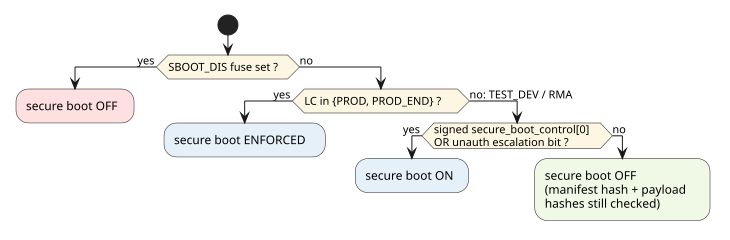
Root Key Model
Eleven classical root-key slots are resolvable by this ROM generation — six embedded in
the ROM image and five held in eFuse — addressed through the manifest’s
128-bit public_key_select_classic bitmap. Only the low 32 bits are assigned. The
numbering is shared with CHIPLET_PUBK_REVOKE, so one bit index names one key in both the
manifest and the revocation fuse; the fuse contributes 32 undifferentiated bits and the
manifest a bitmap, so this ROM’s resolution code (oca_platform.c) is what assigns either
of them meaning and is the definition the table below records:
| Slot | Select bitmap bit | Digest storage | Notes |
|---|---|---|---|
ROM key 0–5 |
bits 0–5 |
SHA-256 digests embedded in the ROM image
( |
Fixed at ROM tapeout. The slot number is the whole identity;
there is no dev/prod distinction in how the ROM resolves them. The table is generated at
build time, always as SHA-256 over the public modulus; the build type selects only which
file form that modulus is read out of — the private test keys in |
reserved |
bits 6–7 |
— |
Reserved: the top two slots of the ROM classical octet are not
assignable by this generation. Selecting one is refused as |
reserved |
bits 14–15 |
— |
Reserved, as bits 6–7, for the ROM PQC octet [13:8]. |
|
bits 16 / 17 |
eFuse bank, 32 B each |
Field programmable: fusing the SHA-256 digest of an RSA-3072 public key enables the slot. An all-zero (unprogrammed) bank shall disable the slot rather than act as a digest anything can match. |
|
bit 20 |
eFuse bank, 32 B |
SiP-owner anchor. As above. |
|
bit 22 |
eFuse bank, 32 B |
System-owner anchor. As above. |
|
bit 24 |
eFuse bank, 32 B |
SiP owner’s second anchor. As above. |
Bits 8–13 and the odd bits interleaved above (18, 19, 21, 23, 25) name PQC key slots. This ROM generation verifies classical signatures only — PQC support is deferred to a later release that adds combined classical + PQC signing — so a manifest selecting one of those is refused as an unsupported variant rather than resolved — handing a key to a verifier that cannot check it would fail later under a code blaming the signature rather than the algorithm. Bits [31:26] are reserved; selecting one is refused.
[SEP-ROM-SB-045] public_key_select_classic shall resolve to
exactly one slot. A selector with more than one bit set is ambiguous about which anchor
applies and shall be rejected rather than resolved to any of them.
The manifest carries the full public key (public_key_classic); the ROM stores or fuses only
digests. [SEP-ROM-SB-050] The ROM shall verify that the SHA-256
digest of the presented public key matches the digest of exactly one authorized slot — a slot
whose bit is set in public_key_select_classic — using a constant-time comparison, before
the key is used for signature verification. A presented key matching no authorized slot
shall be rejected.
Key Revocation
[SEP-ROM-SB-060] The effective revocation set shall be the bitwise
OR of the manifest’s public_key_classic_revoke bitmap and the device-stored revocation
state (CHIPLET_PUBK_REVOKE fuse), and a selected key whose slot is revoked shall be
rejected before signature verification is attempted (OCA_FAIL_ROOT_KEY_REVOKED).
The device fuse is 32 bits wide and maps compactly onto the OCA bitmap positions:
The two bitmaps share one numbering: CHIPLET_PUBK_REVOKE bit N and
public_key_select_classic bit N name the same key. There is no offset, and the
implementation applies none — plat_get_root_key_revocation() copies the 32-bit fuse
directly into the low word of the 128-bit revocation bitmap.
| Key slot | CHIPLET_PUBK_REVOKE bit |
OCA bitmap bit |
|---|---|---|
ROM key 0–5 |
0–5 |
0–5 |
|
16 / 17 |
16 / 17 |
|
20 |
20 |
|
22 |
22 |
|
24 |
24 |
A one-to-one mapping is a security property, not a convenience. If the select and
revoke numberings were ever allowed to differ, authorization would resolve one key while
revocation inspected the bit of another, and a key the device had revoked would boot. The
bit map is defined once, in CHIPLET_PUBK_REVOKE’s field description
(`sep_efuse_map.rdl), and both consumers read that one definition.
|
Anti-Rollback
[SEP-ROM-SB-070] Under secure boot, manifest_security_version
(offset 2042; 128 independent posture flags — not a counter) shall be a bit-superset of
the device-stored security-version flags (manifest AND device == device), rejected
otherwise (OCA_FAIL_SECURITY_VERSION). This check runs before signature verification — so a manifest naming a superseded posture is rejected without spending the modular
exponentiation on it — and is evaluated again afterwards, so a fault that skipped the
first evaluation still has to defeat the second. The device flags are stored in the BL1_VERSION fuse
field (256 bits provisioned; low 128 used).
[SEP-ROM-SB-080] Device security-state commit (OR-ing the
manifest’s revocation bitmap and security-version flags into the fuses, unless suppressed by
manifest_security_control) shall follow the authenticate-before-update rule: it may only
happen after full validation succeeds. The division of labor is architectural, not a
staging decision: the ROM burns no fuses. BL0 performs read-only validation and records the
commit directive in bl0_state; SEP BL1 — the firmware BL0 has just authenticated — owns
the fuse programming. BL0 therefore has no fuse-programming path by design, and one should
not be added to it.
Signature Verification
[SEP-ROM-SB-090] The only signature type this ROM shall accept is
0x01 — RSASSA-PKCS1-v1_5, RSA-3072, SHA-256 — over the signed region [0, 3172). ECDSA
P-256 (0x05) is defined by the format but shall be rejected by this ROM generation.
Verification runs on the OTBN coprocessor: the ROM loads the embedded RSA-3072 modular-exponentiation program into OTBN IMEM/DMEM, supplies the modulus, signature, and expected digest, executes with a timeout, and compares the recovered PKCS#1 v1.5 encoding against the SHA-256 digest of the signed region.
[SEP-ROM-SB-100] The public exponent shall be e = 65537 (F4). SEP secure boot accepts F4 RSA keys only, and a public key carrying any other exponent shall be rejected. This is a permanent property of the design rather than a consequence of how the OTBN program happens to be built, and signing infrastructure shall not issue SEP secure-boot keys with any other exponent.
Consistent with that, the exponent is not taken from the manifest: the OTBN program is the F4 variant, built for e = 65537 and never reading the value the manifest carries. Rejecting a mismatching exponent is therefore the only sound response — the alternative is to verify against an exponent the verifier will not use.
[SEP-ROM-SB-110] The manifest’s public key shall be delivered
directly to OTBN, and the Key Manager shall take no part in secure-boot signature
verification. A public key is not secret, so there is nothing for key-derivation hardware to
protect, and routing it through the Key Manager would make secure boot depend on a block the
ROM otherwise does not use. An earlier specification described provisioning the manifest’s
public key (n, e) into the Key Manager through its software write port; that description
is withdrawn and should not be reintroduced.
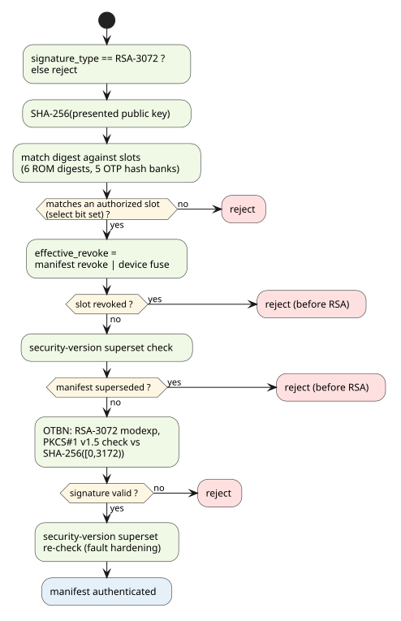
|
IMPLEMENTATION GAP — the secure-boot decision does not yet implement the unauthenticated
escalation flag: |
1.16. Demotion Handling
Lifecycle demotion lowers the device’s effective security posture (e.g. re-enabling debug
visibility) under manifest control. The lifecycle controller exposes two demotion registers —
DEMOTE_1 (0x10918008) and DEMOTE_2 (0x10918010), each with a demote bit and a
lock bit — consumed by hardware; once a register’s lock bit is set, its demote value is
frozen until the next cold reset.
Manifest Directive
The manifest’s demotion_control field (offset 172, u16) carries the directive in its lower
four bits, as two (enable, state) pairs:
| Bit | Name | Meaning |
|---|---|---|
0 |
|
The BL1 pair is present: this manifest states a BL1-stage demotion decision. |
1 |
|
The demotion state to apply to |
2 |
|
The BL2 pair is present: a BL2-stage decision is being conveyed. |
3 |
|
The demotion state for |
4–15 |
reserved |
Must be zero. |
ROM Behavior ([S25])
Demotion is a one-shot, post-validation action (ordering invariant 3, Boot Flow Overview): it executes exactly once, only after the manifest has fully validated, and is never retried.
-
[SEP-ROM-DEM-010] Demotion directives shall be honored only from a validated manifest (manifest hash always; plus signature when secure boot is active).
-
[SEP-ROM-DEM-020] In
PROD_END, the ROM shall never demote: it shall write bothDEMOTE_1andDEMOTE_2withdemote=0, lock=1, permanently locking demotion out for this boot regardless of manifest content. -
[SEP-ROM-DEM-030] Otherwise, if
BL1_DEMOTION_VALID(bit 0) is set, the ROM shall writeDEMOTE_1withdemote = BL1_DEMOTION_ENABLE(bit 1) andlock = 1. If bit 0 is clear, the ROM shall writeDEMOTE_1withdemote = 0, lock = 1, closing the register in the non-demoted state — unless the manifest states a BL2 demotion request, meaningBL2_DEMOTION_VALIDandBL2_DEMOTION_ENABLE(bits 3:2) are both set. That is the only case in whichDEMOTE_1may be left untouched and unlocked, so that BL2 can apply the demotion it asked for. -
[SEP-ROM-DEM-035] The
DEMOTE_1write shall be ordered after the fuse-secret read-locks of [S25]/[S26]: the demotion register is the last fuse state BL0 changes, so a fault while writing it cannot leave the secret fuses readable. Consequently anything that must read a secret shall run before the lock, not between the lock and the demotion write. -
[SEP-ROM-DEM-040] The ROM shall never write
DEMOTE_2except in thePROD_ENDlock-out case. The BL2 pair (bits 3:2) shall be recorded inbl0_state.bl2_demotion_decisionfor BL1 to apply, as the conjunction ofBL2_DEMOTION_VALIDandBL2_DEMOTION_ENABLE— the same predicate that governs the unlock in SEP-ROM-DEM-030, so the recorded decision cannot contradict the register state. -
[SEP-ROM-DEM-050] The applied demotion state shall be an input to the boot measurement (Boot Measurement), so a demoted boot is distinguishable in the measurement chain.
|
The default in SEP-ROM-DEM-030 is deliberately closed. An earlier revision of this
requirement said that a clear |
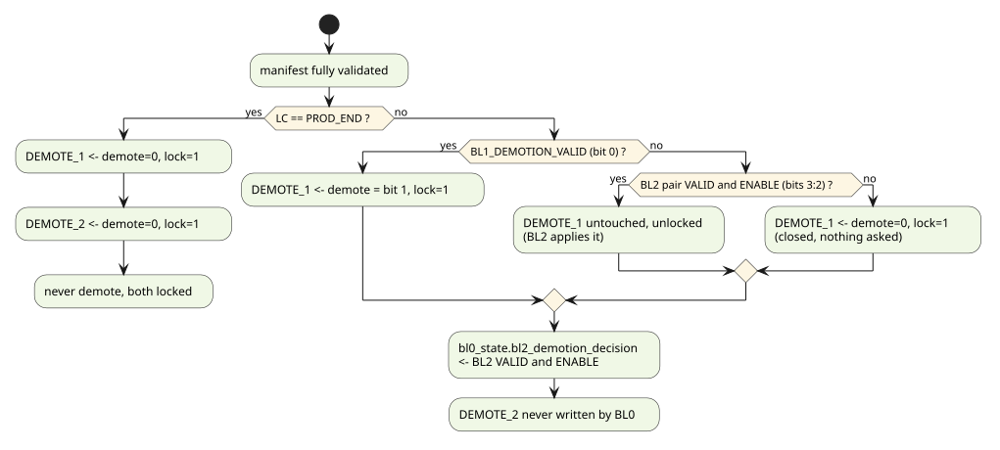
|
IMPLEMENTATION GAP — the ROM now honours both pairs' |
1.17. Payload Loading, Decryption and Verification
The payload is the PTOC-prefixed table of contents plus the concatenated image bytes that
follow the manifest. On a primary chiplet the ROM copies the payload region (located by
payload_offset/payload_length) from flash into SEP SRAM behind the manifest; on
recovery/secondary boots the pair is already staged in SMC SRAM and is copied across under
the same bounds checks. All staging obeys SEP-ROM-SPI-020 / SEP-ROM-SMC-050.
Payload TOC
| Field | Size | Contents |
|---|---|---|
|
4 B |
|
|
2+2 B |
Format version (currently 1.0); reject |
|
8 B |
Cleartext payload length (TOC + images + optional slack). May extend past the last image (in-place flash update room). |
|
8 B (offset 16) |
Number of entries; must be > 0. |
reserved |
8 B |
0. |
| Offset | Field | Size | ROM-relevant meaning |
|---|---|---|---|
0 |
|
16 B |
ASCII: bytes [15:8] vendor string, bytes [7:0] recommended label
( |
16 |
|
4 B |
Image grouping (0 = ungrouped). |
20 |
|
8 B |
Payload-relative image start; multiple of 8. |
28 |
|
8 B |
Image byte count. |
36 |
|
8 B |
Semantic version (major[63:48].minor[47:24].patch[23:0]). |
44 |
|
8 B |
Per-image rollback value, independent of the manifest security version; 0 = unused. OCAH’s per-image rollback mapping is not yet defined — the ROM treats 0 as unused. |
52 |
|
8 B |
Load address, interpreted per image type (SEP-ROM-MAN-050/-060). |
60 |
|
8 B |
Entry point, interpreted per image type; for |
68 |
|
8 B |
Intended recipient chiplet/group (vendor-defined). |
76 |
reserved |
4 B |
0. |
80 |
|
64 B |
Digest over the image bytes (algorithm per |
144 |
|
128 B |
ASCII, NUL-terminated; not used by firmware. |
272 |
reserved |
4 B |
0. |
TOC entries may appear in any order; the Consumer shall not assume they are sorted by offset. Images are 8-byte aligned and non-overlapping; unused bytes between images are permitted (the OCA spec allows arbitrary values there to support in-place flash updates).
[SEP-ROM-PL-010] TOC structural validation shall reject:
image_count == 0; a TOC span (32 + 276·image_count) that overflows or exceeds the
payload; any entry whose [offset, offset+length) overflows or leaves the payload; an entry
offset not 8-byte aligned; and any two entries whose image ranges overlap. All arithmetic is
overflow-checked (OCA_FAIL_PAYLOAD_TOC).
Check Order
-
payload_hash(offset 2775) shall be verified over the stored ciphertext (payload_hashed_lengthbytes, which shall equal the manifestpayload_length— the entire ciphertext) before any decryption — no cipher operation shall ever run on unauthenticated bytes. -
The payload shall then be decrypted in place (below).
-
payload_hash_chain(offset 2847) shall be verified over the recovered plaintext:h₀ = SHA-256(TOC header + entries), then for each TOC entry in stored entry orderh = SHA-256(h ‖ SHA-256(image bytes)); the finalhmust equal the stored chain value (OCA spec:H(H(H(H(TOC) ‖ H(E₁)) ‖ H(E₂)) ‖ …)). -
Each image’s bytes shall additionally match its TOC entry
hashbefore that image is loaded, executed, or handed off (REQ-BTMANFST-63).
[SEP-ROM-PL-040] For a cleartext payload, payload_hash covers
the TOC region only (payload_hashed_length shall equal the TOC span,
32 + 276·image_count — REQ-BTMANFST-59); images are authenticated transitively through
their TOC entry hash values, and the hash chain is likewise verified. These checks shall
run on every boot, regardless of the secure-boot decision — hash checks are the minimum
integrity bar, not a secure-boot feature.
[SEP-ROM-PL-090] Payload length fields shall be cross-checked
before use (REQ-BTMANFST-59/-60/-62): cleartext — manifest payload_length equals the
TOC’s payload_length; encrypted — payload_hashed_length equals the manifest
payload_length, covers at least the TOC header plus one entry, and the manifest
payload_length exceeds the TOC’s by at most one cipher block (PKCS#7 bound). Any
violation rejects the manifest.
[SEP-ROM-PL-050] Payload encryption shall require secure boot: a
manifest marking its payload encrypted while the secure-boot decision is off shall be
rejected (the secure-boot invariant check).
[SEP-ROM-PL-060] Hash comparisons shall be constant-time, and any decryption or hash failure fails the slot attempt (retry per Retry and Backup Bank); decryption failures shall not be silently retried against the same bytes.
Payload bytes not covered by the TOC or any image range are never authenticated (the OCA spec deliberately permits arbitrary values there, for in-place flash updates); in the staged SRAM copy the ROM should zero them after validation so no unmeasured bytes survive into the BL1 environment (legacy-ROM precedent; not yet implemented — Implementation-Status Matrix).
Payload Decryption
Decryption is AES-256-CBC, in place, using the OpenTitan AES block:
-
Key derivation: the AES-256 key (32 bytes) is derived from the
CLASS_KEYfuse secret (0x10930064, 32 bytes) and the manifest’sencryption_kdf_input. [SEP-ROM-PL-070] Decryption shall require a non-zero programmedCLASS_KEY; an all-zero (unprogrammed) class key shall fail the decryption stage. -
IV: the low 16 bytes of
encryption_iv(offset 235). -
Padding: PKCS#7, removed after decryption; a malformed pad is a decryption failure.
-
[SEP-ROM-PL-080] All key material (class key, derived key, KDF inputs) shall be zeroized (
explicit_memzero) on every exit path from the decryption stage, success or failure. TheCLASS_KEYshadow register is read-locked before hand-off (Hand-off to BL1).
|
PROVISIONAL — subject to change. The KDF construction is still under definition. The
current implementation (both |
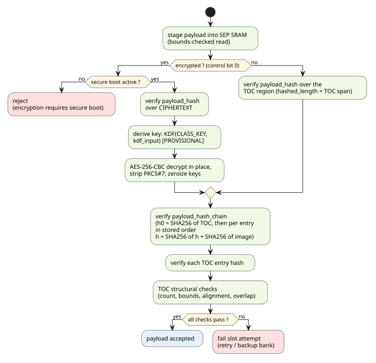
The ROM implements this order through the validation library’s oca_check_payload_at(),
which verifies payload_hash over the stored bytes, then for encrypted and unencrypted
payloads alike, recomputes payload_hash_chain and every TOC entry’s image hash over the
plaintext.
1.18. Boot Measurement
To support TPM-style attestation services in later boot stages, BL0 enrolls two software measurements and leaves them (with their raw inputs) where BL1 can register them onward.
Target Architecture: the PCRV
The OCAH roadmap adds a PCR Vault (PCRV) to the Key Manager IP. Its measurement model: software registers measurement records; the PCRV hashes them internally and accumulates them in an incrementing register bank that software cannot tamper with and that clears only on cold reset (TPM PCR extend semantics). On the key side, the Key Manager can enroll keys to the PCRV on host request as attestation and endorsement keys: an attestation key signs a measurement value or chain to produce a software-state attestation, and an enrolled endorsement key signs the attestation public key to complete the endorsement chain. Those key flows are host-driven, BL1+/runtime functionality — out of BL0 scope. BL0’s role is solely to root the measurement chain.
Ratified posture (2026-07-24):
-
[SEP-ROM-ATT-040] BL0 shall not depend on PCRV hardware: it implements the enrollment model in software ("soft PCRs") and stores results in
bl0_state. BL1 registers BL0’s measurements into the PCRV once that hardware exists; thebl0_statemeasurement fields become legacy at that point (the PCRV bank is then the sole measurement store). -
[SEP-ROM-ATT-050] BL0’s two measurements occupy separate slots, which are the intended future PCRV indices: slot 0 = ROM identity, slot 1 = boot configuration/state — so verifiers can distinguish "same ROM" from "same boot configuration".
Soft Measurement Enrollment
The enrollment primitive (src/measurement.c) mirrors the intended PCRV extend behavior:
with each slot starting as 32 zero bytes at bl0_state initialization.
|
PROVISIONAL — subject to change. The extend formula above anticipates the PCRV interface, which is not yet ratified; the record constituents and slot assignments are settled, the hash construction tracks the future PCRV definition. Verification should parameterize the formula. |
Slot 0: Verified ROM Self-Hash
[SEP-ROM-ATT-010] The ROM image shall embed the SHA-256 hash of its
own code region, computed and inserted at build time (tools/insert-rom-sha256.py; the hash
covers the .text + .metadata bytes — [ROM base, __metadata_end) — and the result is
stored as an 80-byte ASCII string in .rodata, outside the hashed region, so there is no
circular dependency).
[SEP-ROM-ATT-020] The ROM shall report its version string and
self-hash at every boot ([S05]): the full value through the debug console, and a
machine-readable prefix (first 16 bits × 2) as INFO_EXT status words following
SEP_MSG_ROM_HASH on the status channel.
[SEP-ROM-ATT-060] Before enrollment, the ROM shall verify its
embedded self-hash by recomputing SHA-256 over the hashed ROM region and comparing against
the embedded value; a mismatch is fatal (ROM_ERR_ROM_HASH_MISMATCH, 0xF005). The
verified hash is enrolled into slot 0 and recorded raw in bl0_state.rom_hash. This runs
after the crypto self-test ([S14]) and bl0_state initialization ([S10]).
Slot 1: Boot-State Measurement
[SEP-ROM-ATT-030] After the manifest has fully validated and the
demotion decision has been applied — and before the fuse-secret locks and hand-off — the ROM
shall compose the boot-state record below, enroll it into slot 1, and store the raw record
in bl0_state.meas_boot_record for BL1. An enrollment failure is fatal
(ROM_ERR_MEASUREMENT_FAILED, 0xF006).
+
NOTE: "the demotion decision has been applied" means the decision is settled, not that
DEMOTE_1 has been written. SEP-ROM-DEM-035 defers that write until after the
fuse-secret locks, while this requirement places the enrollment before them, so the record
carries the decided values rather than a read-back of the register. The two cannot disagree
— the decided values are exactly what the deferred write applies — and the record still
reflects what BL0 applied rather than what the manifest requested.
| Offset | Size | Field |
|---|---|---|
0 |
32 |
|
32 |
4 |
|
36 |
1 |
|
37 |
1 |
|
38 |
1 |
|
39 |
1 |
reserved (0). |
Each enrollment emits SEP_MSG_RECORD_MEASUREMENT followed by an INFO_EXT word carrying
the slot index.
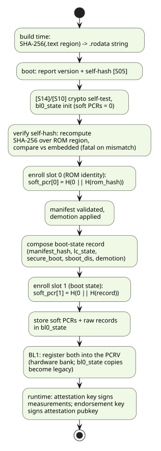
1.19. Hand-off to BL1
Hand-off is the point of no return: the ROM transfers control to mutable software and its fences come down. Everything in this chapter exists to make that transition happen only when every security decision has demonstrably completed — and to make skipping any single check unprofitable for a fault-injection attacker.
Stack Integrity ([S19]/[S28])
[SEP-ROM-HOFF-010] Early in the boot ([S19], immediately after
bl0_state initialization) the ROM shall write the stack canary 0xDEAD5741 at
__stack_bottom — the lowest usable stack address, directly above .bss — and shall
re-verify it as part of the pre-hand-off self-check. A corrupted canary means the stack
overflowed into .bss during boot and is fatal (ROM_ERR_STACK_OVERFLOW, 0xF001).
Fuse-Secret Locking ([S25]/[S26])
[SEP-ROM-HOFF-030] Before hand-off the ROM shall set the SET-only
read-locks in SEP_EFUSE_MAP_LOCKS for all six protected fuse fields — CLASS_KEY,
RMA_SIP_TOKEN_DIGEST, RMA_CHIPLET_TOKEN_DIGEST, CHIPLET_UID, SIP_UID and SYS_UID —
so no post-ROM software can read them, and shall then independently re-read the LOCKS
register and confirm every lock bit is set ([S26]). Failure to confirm is fatal
(ROM_ERR_FUSE_SECRETS_NOT_LOCKED, 0xF003).
All six are secrets, the UIDs no less than the keys and tokens. Each UID is the per-device
secret seed the Key Manager derives keys from, so a UID that leaks compromises every key
derived from it. A UID is not an identifier — the non-secret per-part identifiers are the
ID fuses (CHIPLET_ID, SIP_ID, SYSTEM_ID), which a manifest binds to
(OCA Manifest Format and Parsing) and which are not read-locked. All six locked fields declare the same
sw=rw, onwrite=woset, hw=r properties in sep_efuse_map.rdl, so one SET-only write latches
them together.
The lock is soft: it is a bit in the LOCKS shadow register, not a burned fuse, so it clears on reset and is re-established by the ROM on every boot. It constrains post-ROM software within the boot that set it — it is not a permanent device state.
Pre-Hand-off Self-Check (Gate Ledger)
The accept-then-hand-off decision is hardened against single-glitch fault injection with a lockstep gate ledger (specified here; not yet implemented):
-
Four acceptance gates each record a bit in a
gate_okword and clear the same bit in a complement wordgate_inv(initialized to all-ones) as they pass:BOOT_GATE_MANIFEST(manifest loaded + structurally validated),BOOT_GATE_CRYPTO(secure-boot crypto verified, or affirmatively not required),BOOT_GATE_HASH(payload hashes verified),BOOT_GATE_FUSELOCK(fuse-secret locks confirmed). -
[SEP-ROM-HOFF-040] Immediately before the jump, the ROM shall require
gate_ok == BOOT_GATE_EXPECTandgate_inv == ~BOOT_GATE_EXPECT. A skipped gate leaves both words wrong; a glitch would have to corrupt two complementary values consistently. -
[SEP-ROM-HOFF-050] The self-check shall additionally re-verify, twice each over independently evaluated (optimizer-opaque) operands: the manifest locus (the validated manifest sits at the SEP SRAM base, within range) and the fuse-secret lock state. The checks are evaluated fail-fast (halt on the first false entry), an independent iteration counter is confirmed to equal
i+1on every iteration, and a final tally re-confirms both counters equal the number of checks. Any shortfall or disagreement is fatal (ROM_ERR_HANDOFF_SELFCHECK_FAILED,0xF004). -
The construction is strictly additive: a fault can only cause a false halt, never a false accept.
bl0_state Hand-off Block
bl0_state is the ROM→BL1 interface, placed at the very top of DCCM
(0xC0040000 + 0x20000 − sizeof) so BL1 can discover it by magic and size from the DCCM end.
| Field | Type | Contents |
|---|---|---|
|
u32 |
|
|
u32 |
Address of the validated manifest in SEP SRAM. |
|
u32 |
Address of the status ring buffer (SEP view). |
|
u32 |
|
|
bool |
The secure-boot decision (Secure-boot decision truth table). |
|
bool |
Chicken-bit fuse value. |
|
u32 |
Validated lifecycle state. |
|
u32 ×2 |
Lifecycle controller |
|
u32 |
0, or the fatal error recorded by |
|
u8[2][32] |
Soft measurement bank: slot 0 = ROM identity, slot 1 = boot state (Boot Measurement). Legacy once the PCRV exists. |
|
u8[32] |
Verified ROM self-hash (raw record for slot 0). |
|
40 B |
Raw boot-state record for slot 1 (Boot-state record ( |
|
bool |
Recorded BL2 demotion pair (Demotion Handling). |
|
u32 ×2 |
Struct size and trailing |
Release and Jump ([S29])
-
[SEP-ROM-HOFF-060] Only after the self-check passes shall the ROM release the PMP execution fence for the region BL1 was loaded into — a single rewrite of the locked BL1-region rule under
mseccfg.RLB=1(SEP-ROM-PMP-080, Fence Binding and Release Mechanism (Smepmp)). The release shall be the last write before the jump sequence. -
The BL1 image is copied from its staged payload location to its TOC entry’s
load_addr, and control transfers toload_addr + entry_point(SEP-ROM-MAN-050/-060). -
[SEP-ROM-HOFF-070] The jump shall order memory correctly for freshly written code:
mepc ← entry,fence.i(IFU sees the new SRAM contents),fence(stores complete), thenmret. The ROM never expects control back; the only re-entry paths are cold reset and the warm-reset protocol (Warm-Reset Resume Path).
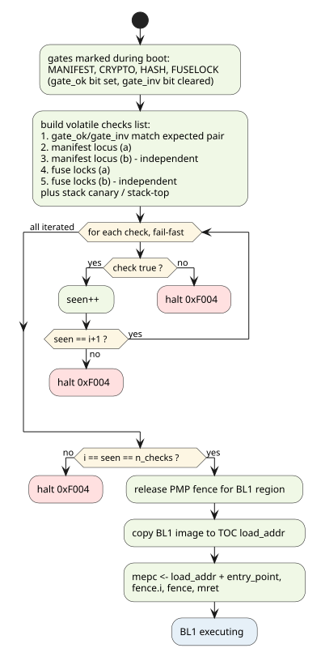
|
IMPLEMENTATION GAP — three items:
|
1.20. Retry and Backup Bank
Boot flash carries two complete, independent manifest+payload pairs (Boot flash layout). If anything in the load/validation chain fails against one slot, the ROM retries the entire chain against the other before declaring the boot failed.
Slot Selection
[SEP-ROM-RETRY-010] In BOOT_MODE_SPI the ROM shall attempt at
most two slots, indexed slot = attempt XOR rotate_update: with the strap clear, primary
(0x1000) then backup (0x41000); with the rotate_update strap set, the order swaps
(A/B-update support — a freshly written bank can be trialed first while the known-good bank
remains the fallback). Recovery and secondary boots make exactly one attempt (the platform,
not the ROM, owns retry there).
Retry Scope
[SEP-ROM-RETRY-030] The retry unit shall be the entire per-slot validation chain: transport read, structural validation, manifest hash, usage constraints, secure-boot crypto (revocation, signature, anti-rollback), payload staging, decryption, every payload hash check, and the BL1 loadability check (SEP-ROM-MAN-060: a BLSTAGE1 entry is present and its placement is permitted). A failure anywhere in that chain fails the slot, not the boot, until no slot remains.
The BL1 check is inside the unit because a slot describing a BL1 this device cannot load is an unusable slot, and the backup may well be usable. Only the copy and jump wait for hand-off — those mutate state, the check does not.
[SEP-ROM-RETRY-040] Between attempts the ROM shall return to a clean state: the staged SRAM region is zeroed (no partially validated bytes survive into the next attempt) and the flash transport is re-initialized against the backup bank (Cadence: backup configuration TLV; OpenTitan: controller re-bring-up).
The one-shot, state-mutating stages (demotion, fuse locks, measurement, hand-off) sit strictly after the retry loop (ordering invariant 3, Boot Flow Overview): a slot failure can never leave a half-applied device-state change behind.
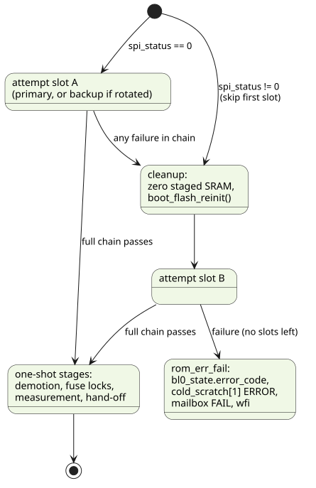
BOOT_MODE_SPI)Failure Convergence ([S30])
[SEP-ROM-RETRY-050] Every fatal path in the ROM shall converge in
a single failure routine (rom_err_fail) that (a) records the error code in
bl0_state.error_code, (b) writes the encoded ERROR status to cold_scratch[1],
(c) emits the FAIL magic and code through the STDOUT mailbox, and (d) parks in wfi. The
ROM never silently resets or falls through on failure; recovery from a fully failed boot is
the platform’s job (recovery strap, Primary / Secondary Strap Handling).
The whole per-slot sequence runs inside the retry loop: try_manifest_slot() performs the
load, header checks, oca_validate_manifest() (including signature verification) and
oca_check_payload_at(), so a slot failing crypto or a payload hash rotates to the backup
bank like any other slot failure, per SEP-ROM-RETRY-030.
1.21. Status and POST Codes
Every boot stage announces itself through a machine-readable status channel. This is the primary observability contract for DV, debug, and the platform: a hung or failed boot is diagnosed from the last status word, not from console text (debug text exists only in debug builds).
Encoding
Status words are 32 bits:
STATUS_ENCODE(type, value) = (type & 0xFF) << 24 // message type
| (SEP_STATUS_ID) << 16 // 1 = BL0, 2 = BL1
| (value & 0xFFFF) // SEP_MSG_* code| Type | Value | Use |
|---|---|---|
|
|
Stage progress (mirrored to the ring). |
|
|
Recoverable anomaly (e.g. repair-gate bypass). |
|
|
Fatal; last word before the ROM parks. |
|
|
Scratch-only progress (not mirrored to the ring). |
|
|
16-bit payload word following the preceding status (frequencies, IDs, hash prefixes). |
Type values 0x00–0x7F are defined by the OCCP specification; 0x80+ are
implementation-specific.
Channels
| Channel | Location | Contents |
|---|---|---|
Status scratch |
|
Every |
Status ring |
SMC SRAM (offset from scratch[11]) |
Every non- |
STDOUT mailbox |
|
DV signalling: magic |
Progress scratch |
|
Boot markers ( |
Virtual console |
|
Packed debug text (debug builds only; decoded by the DV monitor). |
Ring-Buffer Semantics
The ring lives in SMC SRAM (head owned by SEP, tail by SMC, lock-free).
[SEP-ROM-STAT-010] The producer shall bounds-check the ring
structure and every entry write against the SMC SRAM window, and shall degrade gracefully on
an invalid ring (report STATUS_REPORTING_INVALID on the scratch channel; never write
outside the window; never disable reporting on a possibly-transient error).
Code Registry
[SEP-ROM-STAT-030] All SEP_MSG_* status codes shall be
single-sourced from hw/sys/sep/bootrom/prod/include/status_values.h (values 0x01–0x1FF are aligned with
0x200+ are OCAH-specific). The C header and the DV decoder
are generated from it; the table below is likewise generated — do not hand-edit code values
anywhere, including here.
| Value | Name |
|---|---|
|
|
|
|
|
|
|
|
|
|
|
|
|
|
|
|
|
|
|
|
|
|
|
|
|
|
|
|
|
|
|
|
|
|
|
|
|
|
|
|
|
|
|
|
|
|
|
|
|
|
|
|
|
|
|
|
|
|
|
|
|
|
|
|
|
|
|
|
|
|
|
|
|
|
|
|
|
|
|
|
|
|
|
|
|
|
|
|
|
|
|
|
|
|
|
|
|
|
|
|
|
|
|
|
|
|
|
|
|
|
|
|
|
|
|
|
|
|
|
|
|
|
|
|
|
|
|
|
|
|
|
|
|
|
|
|
|
|
|
|
|
|
|
|
|
|
|
|
|
|
|
|
|
|
|
|
|
|
|
|
|
|
|
|
|
|
|
|
|
|
|
|
|
|
|
|
|
|
|
|
|
|
|
|
|
|
|
|
|
|
|
|
|
|
|
|
|
|
|
|
|
|
|
|
|
|
|
|
|
|
|
|
|
|
|
|
|
|
|
|
|
|
|
|
|
|
|
|
|
|
|
|
|
|
|
|
|
|
|
|
|
|
|
|
|
|
|
|
|
|
|
|
|
|
|
|
|
|
|
|
|
|
|
|
|
|
|
|
|
|
|
|
|
|
|
|
|
|
|
|
|
|
|
|
|
|
|
|
|
|
|
|
|
|
|
|
|
|
|
|
|
|
Fatal ROM Error Codes
Fatal errors reported through rom_err_fail() (mailbox + bl0_state.error_code) use a
separate 32-bit namespace:
| Code | Value | Cause |
|---|---|---|
(unnamed) |
|
SMC scratch round-trip mismatch (SMC Synchronization); the code uses the
bare literal — a |
|
|
Invalid LC state (Fuse and System State). |
|
|
|
|
|
SMC coordination unavailable. |
|
|
Memory-repair gate failed, no bypass (SMC Synchronization). |
|
|
SPI bring-up failed (informational; non-fatal by itself, SEP-ROM-STRAP-020). |
|
|
Stack canary corrupted (Hand-off to BL1). |
|
|
SHA-256 known-answer test failed (CPU Initialization). |
|
|
Fuse-secret lock verification failed (Hand-off to BL1). |
|
|
Pre-hand-off self-check failed (Hand-off to BL1). |
|
|
ROM self-hash recompute mismatch (or unparsable embedded hash) (Boot Measurement). |
|
|
Measurement enrollment failed (hash engine) (Boot Measurement). |
|
|
|
Manifest-path failures use the MANIFEST_ERR_* namespace and map from oca_result_t; the
authoritative mapping is Security-Check Inventory.
Appendix A: Boot-Stage to Status-Code Traceability
Boot stage → status code traceability maps every boot stage to the status codes it emits, in emission order —
the DV entry point for stage-by-stage checkers. Code names are authoritative here; their
numeric values come only from the generated registry (SEP_MSG_* status codes (151 defined)). → INFO_EXT
denotes a following 16-bit payload word.
| Stage | Progress codes (scratch and/or ring) | Failure codes |
|---|---|---|
vector.S entry |
|
trap → mailbox FAIL |
PMP programmed |
|
— |
runtime init |
|
|
[S04] main entry |
|
— |
[S04] SMC sanity |
— |
|
[S05] ROM identity |
|
— |
[S06] straps |
|
— |
[S07] status init |
|
|
[S08] fuse sense |
|
— (unbounded poll; hang is the failure mode) |
[S09] clocks |
|
|
[S11] lifecycle |
|
|
[S12] chip ID |
|
— |
[S03] repair gate |
|
|
periph reset |
|
— |
[S14] crypto self-test |
|
|
[C9a/b] memory clear |
|
— |
[S10] bl0_state |
|
— |
[S18] SBOOT_DIS |
|
— |
[S20] DMA |
|
— |
[S21] boot mode |
|
SPI bring-up failure recorded ( |
SMC coordination |
|
— |
[S23] manifest |
|
|
[S24] crypto |
|
|
payload hashes |
— |
|
[S25] demotion + locks |
|
|
[S17] slot 0 (post-[S10]) |
|
|
[S27] slot 1 (post-demotion) |
|
|
[S29] hand-off |
|
|
[S28] canary |
— |
|
PASS (DV builds) |
none from the ROM — BL1 signals it. |
— |
Appendix B: Security-Check Inventory
Every security decision the ROM makes, as one row each: what is checked, against what, what
failing looks like, and the ordering constraints a verification environment must assert.
oca_result_t codes apply to the OCA-migrated validation path; the requirement column links
the governing "shall".
| Check | Inputs | Pass condition | Failure code | Ordering / requirement |
|---|---|---|---|---|
Warm-handler range |
|
|
hang (no code) |
Before any DCCM access. CPU-110..140 |
Runtime init |
|
pattern intact, bss zero |
|
First check in
|
SMC path sanity |
scratch[7] round-trip |
4/4 patterns match |
|
Before protocol use. SMC-020 |
LC validity |
|
value ∈ closed set |
|
Before any policy decision. FUSE-020 |
Memory-repair gate |
|
|
|
Before memory use. SMC-030 |
SHA-256 self-test |
NIST "abc" vector |
digest match |
|
Before any hash-based decision. CPU-090 |
Flash read bounds |
offset/len/dst |
within slot window ∧ dst in SRAM; doubled evaluation agrees |
|
Before every transport read. SPI-020 |
Manifest structure |
magic, trailer, version, length, reserved |
all structural rules |
|
First per-slot checks. MAN-030 |
Manifest hash |
bytes |
SHA-256 match (const-time) |
|
Every boot, before crypto. MAN-010 |
Secure-boot invariant |
encryption bit, SB decision |
encrypted ⇒ SB active |
|
Structural stage. PL-050 |
Identity constraints |
|
selected words equal |
|
Unavailable = fail. MAN-040 |
Lifecycle constraint |
|
device LC bit set |
|
MAN-040 |
Version range |
|
within window |
|
MAN-040 |
Key authorization |
presented key digest vs 11 slots (6 ROM, 5 OTP),
|
digest matches an authorized slot (const-time) |
|
Before any public-key operation. SB-050 |
Key revocation |
manifest revoke ∪ device fuse |
selected slot not revoked |
|
Before signature verify. SB-060 |
Signature |
signed region |
PKCS#1 v1.5 verify OK |
|
After revocation; only type 0x01. SB-090 |
Anti-rollback |
|
bit-superset |
|
Before signature, and again after. SB-070 |
Ciphertext payload hash |
stored payload, |
SHA-256 match |
|
Before decryption. PL-030 |
Payload decryption |
CLASS_KEY (non-zero), KDF input, IV |
KDF + AES-256-CBC + PKCS#7 OK; keys zeroized |
|
Only after ciphertext hash. PL-030/-070/-080 |
Plaintext hash chain |
TOC + images |
chain and per-image digests match |
|
After decrypt (or always when cleartext). PL-030/-040 |
TOC structure |
TOC header/entries |
count/bounds/alignment/overlap rules |
|
PL-010 |
BL1 presence + placement |
TOC entry type, |
|
|
PL-020, MAN-050/-060 |
Demotion authority |
validated manifest, LC |
PROD_END lock-out; pairs per
|
— (directive, not check) |
Only post-validation, one-shot. DEM-010..050 |
ROM self-hash verify |
embedded hash string; recompute over |
digests equal |
|
After [S14]+[S10], before slot-0 enrollment. ATT-060 |
Fuse-secret locks |
|
set, then independently re-read as set |
|
[S25] set → [S26] verify → re-checked in self-check. HOFF-030 |
Stack integrity |
canary @ |
canary intact; stack at initial top |
|
In pre-hand-off self-check. HOFF-010/-020 |
Gate ledger |
|
full expected set, complements agree, tally exact |
|
Last decision before PMP release + jump. HOFF-040/-050 |
Appendix C: Implementation-Status Matrix
Consolidated view of every divergence between this specification and the boot ROM at
hw/sys/sep/bootrom/prod (plus toolchain issues that block end-to-end flows). Each row
cross-references the chapter carrying the detailed call-out.
Last reconciled against the implementation on 2026-09-03, after the OCA boot-manifest integration and the entropy-chain bring-up. Rows marked closed were gaps in an earlier revision of this document and have since been implemented and verified; they are kept rather than deleted so the record of what changed is not lost.
| Item | Status | Summary | Where |
|---|---|---|---|
OCA CLASSIC manifest |
closed |
The ROM links the freestanding OCA validation library and supplies platform callbacks. Verified on the VP and in RTL simulation. |
|
Key selection encoding |
closed |
The OCA 128-bit select bitmap resolves to one slot, and the manifest’s revoke bitmap is read and unioned with the device fuse. |
|
Root key authorization |
closed |
Added to the validation library during integration: the presented key’s digest is matched against a ROM digest or an OTP hash bank before any public-key operation, and a signature check reached without it is refused. |
|
Fuse-key digest addresses |
closed |
The off-by- |
|
Anti-rollback scheme |
closed |
128-bit flag superset, evaluated before signature verification and again after. |
|
Payload check order |
closed |
Payload hash over the ciphertext before decryption, hash chain and per-entry TOC hashes over the plaintext after. |
|
Payload cipher AES-256-CBC |
closed |
|
|
Retry scope |
closed |
The whole per-slot sequence — including signature verification and the payload checks — runs inside the retry, so a slot failing crypto now rotates to the backup. Per-slot verdicts report as warnings; only exhausting every slot is an error. |
|
Packer backup-manifest offset |
closed |
The OCA combined-image configs place the backup
manifest at |
|
Packer SEP IRAM constants |
obsolete |
The legacy packer and its two configs have been
removed from this repository; the OCA producer carries no |
|
Crypto block reset release |
closed |
OTBN and AES are explicitly released from
|
|
PMP fence policy |
gap |
SRAM/ICCM are RWX from cold boot; entries unlocked (don’t bind M-mode); release-at-hand-off unimplemented; window set doesn’t match data-window needs. |
|
PMP binding/release mechanism |
ratified, not implemented |
Smepmp ratified 2026-07-23
(Fence Binding and Release Mechanism (Smepmp)): RLB → locked rules → MMWP at cold boot; release = one rule rewrite
at hand-off (SEP-ROM-PMP-060/-070/-080). Code writes neither |
|
Exponent constraint |
by design |
Ratified: SEP secure boot accepts F4 (e = 65537) RSA keys only. A permanent constraint, not a consequence of the OTBN program build; any other exponent is rejected (SEP-ROM-SB-100). |
|
Key Manager public-key provisioning |
by design |
Not used and not planned. The modulus goes straight to OTBN; the Key Manager has no role in secure-boot verification (SEP-ROM-SB-110). The earlier specification text describing a Key Manager software-write-port path is withdrawn. |
|
Entropy chain bring-up |
closed |
Ownership resolved to BL0: the ROM brings up the internal ESRC → CSRNG → EDN chain lazily from the crypto callbacks that need it, locks the ESRC and source-selection configuration, and fails the boot with an attributable status if any stage does not come up. The whole-chain testbench grant it replaces is unused; simulation now forces only the ESRC noise source. |
|
Handoff self-check ledger |
unmerged |
Implemented (commit |
|
Stack canary / stack-top at hand-off |
partial |
Canary re-check closed: it now runs
immediately before |
|
Secure-boot escalation flag |
gap |
|
|
RMA secure-boot policy |
ratified |
Secure boot is manifest-optional in both RMA states (decision 2026-07-23), matching the implementation — no code change needed. |
|
Device security-state commit |
by design |
Not a gap. The ROM burns no fuses at all: BL0
performs read-only validation and records the commit directive in |
|
Demotion directive source |
gap (narrowed further) |
OCA |
|
Payload gap zeroing |
gap (should) |
Un-hashed inter-image bytes not zeroed after validation (legacy ROM did). |
|
Boot measurement |
unmerged |
Soft measurement enrollment implemented
2026-07-24 ( |
|
Measurement encoding |
superseded by PCRV |
The final record wire format belongs to the future Key Manager/PCRV interface; the soft version’s extend formula is provisional pending that ratification. BL1-side PCRV registration is future work. |
|
Payload KDF |
provisional |
SP 800-108r1 KBKDF construction implemented and KAT-checked, but the construction is explicitly subject to change. |
|
BL1 load address / entry point |
resolved |
Per OCA Boot Manifest Spec v0.8 Table 6, TOC
entries carry |
|
|
closed |
Re-verified against the upreved submodule
(2026-09-02). Payload TOC entry, 276 B (OCA spec v0.8 Table 6) matches |
|
Fuse-sense readiness |
gap |
Only the PLL path polls |
|
Peripheral/bus reset |
stub |
|
|
ROM key digests |
gated |
|
|
ECDSA P-256 |
by design |
Defined by the format, rejected by this ROM generation. |
|
PQC signatures and key slots |
deferred |
Deferred to a later release, which adds combined classical + PQC signing. In this generation PQC manifest geometry is parsed, but PQC signatures and PQC key slots are refused as an unsupported variant rather than accepted unverified. |
|
Multi-signer / co-signer verification |
deferred |
Deferred to the same later release.
This generation verifies a single classical RSA-3072 signature against one root key; the
verifier and co-signer keys that populate the |
|
OTP-fuse SPI profile select |
gated |
Deliberately unimplemented pending OTP-usage evaluation (research R13); boot never depends on programmed fuses. |
|
Strap-bit definition duplication |
hygiene |
Strap bit positions defined in both
|
Appendix D: Requirement Index
All 95 tagged requirements. Each ID links to its definition.
| ID | Summary | Section |
|---|---|---|
Only hart 0 boots; others park |
||
Trap vector before first MMIO |
||
MRAC before warm-scratch read |
||
Outbound filter default-deny; open only needed windows |
||
Interrupts disabled throughout ROM |
||
Runtime-init self-check, fatal on mismatch |
||
Any trap is fatal: report, FAIL, hang |
||
ROM never arms the WDT |
||
SHA-256 known-answer self-test before use |
||
SRAM + ICCM cleared before external content |
||
Warm-handler slot read before any DCCM access |
||
Warm handler accepted only within ICCM or SEP SRAM |
||
Poison warm scratch before jump |
||
Invalid warm handler hangs, never cold-boots |
||
Stack and C globals live in DCCM, not SRAM |
||
DCCM left deterministic before the C runtime reads it |
||
Fetch only from ROM until hand-off release |
||
Fences must bind machine mode (lock/Smepmp) |
||
Next-stage regions RW- until hand-off |
||
Data windows limited to demonstrated needs |
||
Release is the last security action |
||
RLB set before first locked rule; all fence rules locked |
||
MMWP set after rules; unmatched access traps |
||
Release = single BL1-rule rewrite under RLB, post-self-check |
||
No fuse consumption before sense complete |
||
Invalid LC ⇒ SMC reset + fatal |
||
LC recorded in bl0_state + reported |
||
SMC SRAM values exchanged as offsets |
||
Scratch round-trip sanity, fatal on mismatch |
||
Memory-repair gate (strap-bypassable) |
||
Wait MANIFEST_READY before scratch[8] |
||
Reject invalid offset; bounds-check staging |
||
Exactly one boot mode, recorded + reported |
||
SPI init failure ⇒ skip slot, not fatal |
||
All flash access via the transport shim |
||
Doubled, laundered bounds gate; default-reject |
||
Bounded transport retries; never partial data |
||
Boot never depends on programmed OTP for SPI |
||
Manifest hash verified every boot |
||
Validate via OCA library + callback table |
||
Canonical check order, first-failure stop |
||
Unavailable constraint input = failure |
||
Launch BLSTAGE1 image at its TOC
|
||
Placement validated against a permitted execution
region (ICCM always; SRAM per |
||
PROD/PROD_END enforce secure boot |
||
TEST_DEV/RMA: either trigger enables |
||
Escalation flag is escalation-only |
||
SBOOT_DIS disables unless signed secure_boot_control asks |
||
Key selector must resolve to exactly one slot |
||
Key digest must match an authorized slot |
||
Revocation = manifest ∪ device, before RSA |
||
Security-version superset, before and again after signature |
||
Authenticate-before-update; commit via BL1 |
||
RSA-3072-PKCS1v15-SHA256 only; ECDSA rejected |
||
F4 keys only (e = 65537); any other exponent rejected |
||
Public key goes straight to OTBN; Key Manager not involved |
||
Entropy chain brought up lazily, once, before first use |
||
Entropy bring-up failure stops the boot; not a per-slot failure |
||
ESRC |
||
TRNG source selection locked after bring-up |
||
External-TRNG substitution is a link-time seam |
||
Demotion only from a validated manifest |
||
PROD_END: never demote; lock both registers |
||
BL1 pair → DEMOTE_1 write+lock; closed non-demoted by default, left open only on a stated BL2 request |
||
DEMOTE_1 write ordered after the fuse-secret lock |
||
BL0 never writes DEMOTE_2; BL2 pair recorded as VALID ∧ ENABLE |
||
Demotion state feeds the measurement |
||
TOC structural validation rules |
||
SEP_BL1 image must be present |
||
Encrypted: ciphertext hash → decrypt → chain |
||
Cleartext payloads still fully hash-checked |
||
Encryption requires secure boot |
||
Const-time compares; failures fail the slot |
||
Decryption requires non-zero CLASS_KEY |
||
Key material zeroized on every exit path |
||
Payload length fields cross-checked (REQ-BTMANFST-59/-60/-62) |
||
ROM self-hash embedded at build |
||
Version + self-hash reported every boot |
||
Boot-state record enrolled in slot 1, raw record kept |
||
Soft enrollment in bl0_state; BL1 registers into PCRV; legacy after |
||
Separate slots: 0 = ROM identity, 1 = boot state |
||
Self-hash verified by recompute before enrollment |
||
Canary written early, re-verified pre-hand-off |
||
Stack unwound to initial top at hand-off |
||
Fuse-secret locks set and independently re-verified |
||
Gate ledger: full set + complement agree |
||
Doubled invariants, fail-fast, counter + tally |
||
PMP release only after self-check, last write |
||
Jump orders memory: mepc, fence.i, fence, mret |
||
Two slots, rotate-aware order; one attempt for SMC paths |
||
SPI-init failure skips first slot, reinit for fallback |
||
Retry unit = entire validation chain, BL1 loadability included |
||
Clean state between attempts |
||
All failures converge in rom_err_fail |
||
Ring bounds-checked; degrade gracefully |
||
Severity-reserved ring capacity |
||
Status codes single-sourced from the TSV |